总榜 / 100
| 模型 / 智能体 | 语言模型 | 图像模型 | 总分 | 事实依据 /16 | 覆盖度 /8 | 叙事 /8 | 视觉 /22 | 图表 /18 | 可编辑性 /14 | 修改稳定性 /8 | 效率 /6 |
|---|---|---|---|---|---|---|---|---|---|---|---|
| Codex | gpt-5.5 extra high | nb | 99 | 16 | 8 | 8 | 21 | 18 | 14 | 8 | 6 |
| OpenDesign | default | unknown | 93 | 14 | 8 | 8 | 20 | 17 | 13 | 7 | 6 |
| WorkBuddy | Auto | Auto | 92 | 16 | 7 | 8 | 18 | 18 | 12 | 7 | 6 |
| Manus | 1.6 lite | unknown | 18 | 2 | 1 | 1 | 2 | 5 | 3 | 2 | 2 |
| Codex | glm5.2 | nb | 18 | 5 | 2 | 2 | 3 | 3 | 2 | 0 | 1 |
| OpenClaw | glm5.2 | nb | 18 | 5 | 2 | 2 | 3 | 3 | 2 | 0 | 1 |
| OpenAgents | glm5.2 | nb | 14 | 3 | 2 | 2 | 2 | 2 | 2 | 0 | 1 |
结果矩阵
| 提示词摘要 | WorkBuddy | Manus | Codex | Codex | OpenClaw | OpenDesign | OpenAgents |
|---|---|---|---|---|---|---|---|
| Auto | 1.6 lite | gpt-5.5 extra high | glm5.2 | glm5.2 | default | glm5.2 | |
| CASE-GEN-001 商业计划书 基于 Fancy's Foods / Whipped Dream 商业计划 PDF，生成 10 页英文投资人/渠道伙伴路演 PPT。必须覆盖市场问题、产品差异、餐厅验证、分阶段扩张、冷冻杯装与压力罐分销、竞争优势、制造/合作计划、财务预测、风险预案和投资/合作诉求；至少 3 页要有可编辑图表/表格，事实必须来自 PDF。 | v0.2 新跑结果 8/10 任务：商业计划路演。结论：基本完成；页数不符。 PPTX 未公开 · 截图 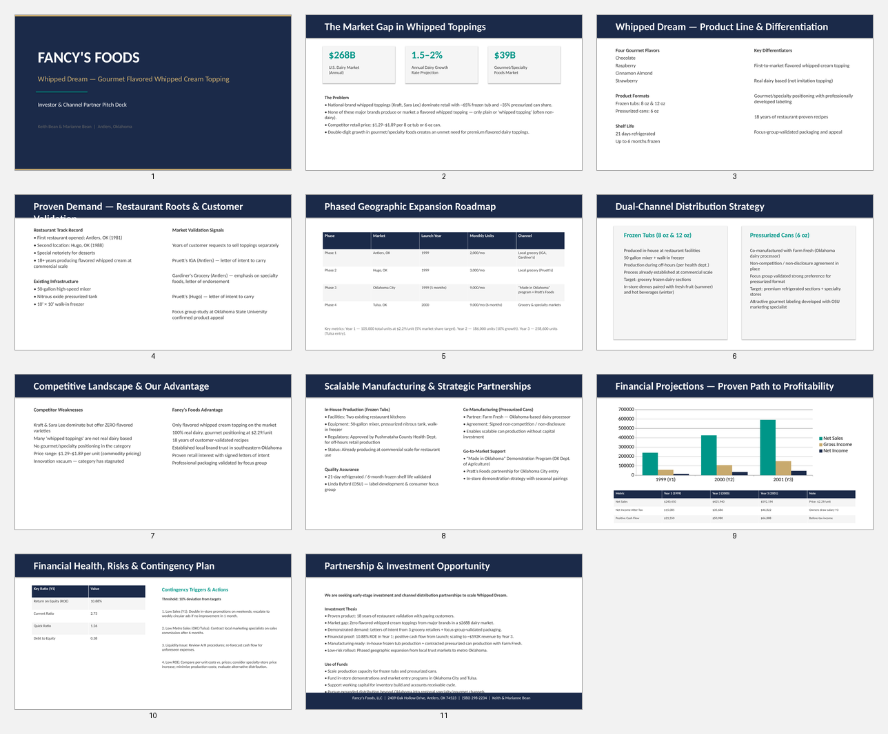 | v0.2 新跑结果 9/10 任务：商业计划路演。结论：部分内容缺少来源支撑。 PPTX 未公开 · 截图 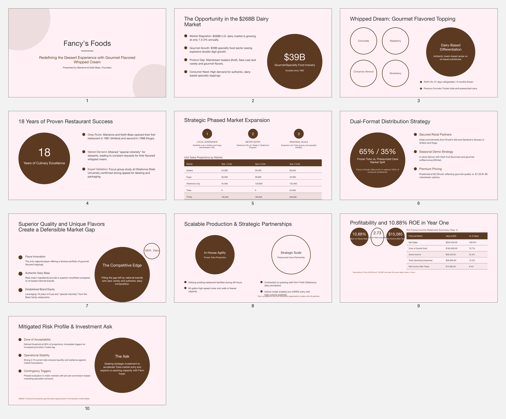 | 正式流程前结果 9/10 任务：商业计划路演。结论：基本完成；视觉偏表格化。 PPTX 未公开 · 截图  | 正式流程新跑结果 10/10 任务：商业计划路演。结论：完成关键要求。 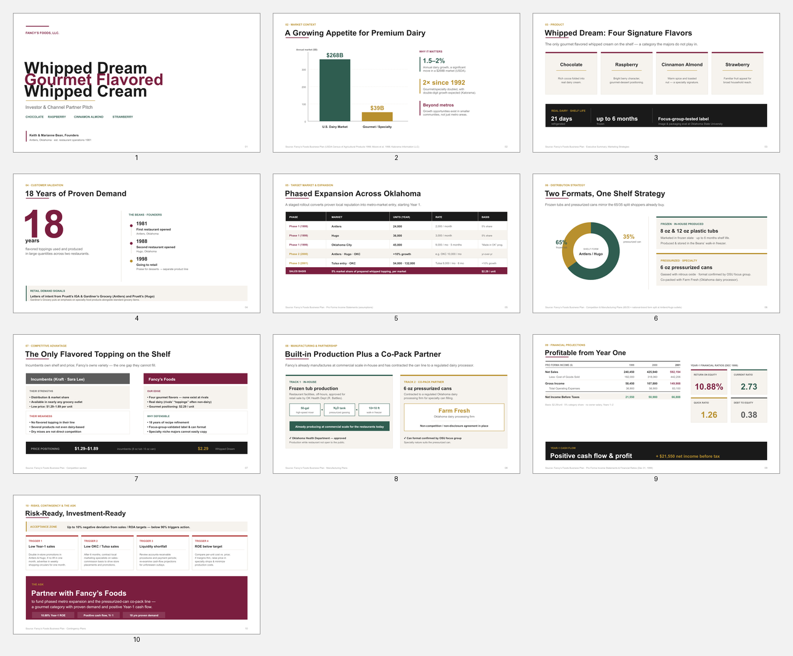 | 正式流程新跑结果 10/10 任务：商业计划路演。结论：完成关键要求。 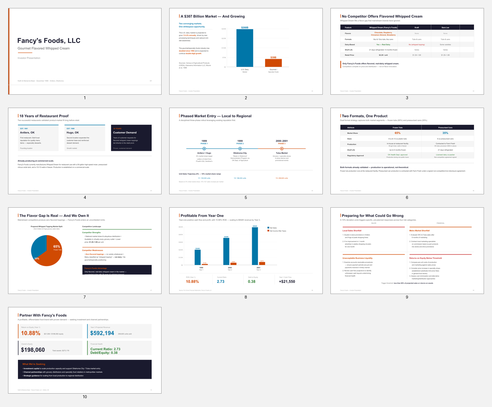 | v0.2 新跑结果 9/10 任务：商业计划路演。结论：内容可用；PPTX 可编辑性不足。 PPTX 未公开 · 截图  | v0.2 新跑结果 9/10 任务：商业计划路演。结论：基本完成；视觉偏表格化。 PPTX 未公开 · 截图  |
| CASE-GEN-002 产品发布 基于 Apple iPhone 16 Pro 发布资料，生成面向产品发布、媒体和渠道销售的英文产品发布 PPT。要求高级消费电子发布会风格，突出产品定位、相机控制、A18 Pro、Apple Intelligence、材料/尺寸、价格/上市信息等源文档事实，不能编造销量、市场份额或未披露指标。 | 历史产物 / 按 v0.2 折算 7/8 任务：产品发布演示文稿。结论：历史产物；按 v0.2 折算。 PPTX 未公开 · 截图 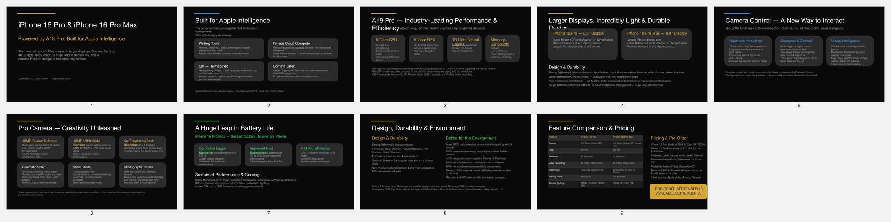 | 无 PPTX 任务：产品发布演示文稿。结论：未产出可评分 PPTX。 日志未公开 | 正式流程新跑结果 8/8 任务：产品发布演示文稿。结论：完成关键要求。  | 正式流程新跑结果 8/8 任务：产品发布演示文稿。结论：完成关键要求。  | 正式流程新跑结果 8/8 任务：产品发布演示文稿。结论：完成关键要求。 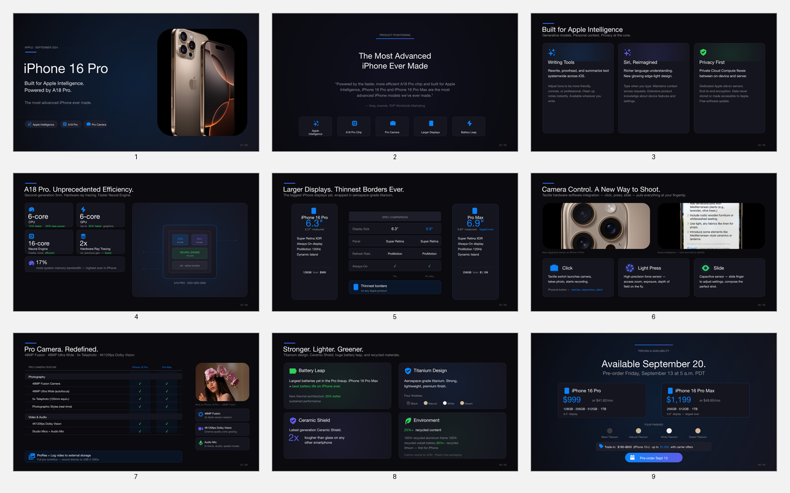 | 历史产物 / 按 v0.2 折算 7/8 任务：产品发布演示文稿。结论：历史产物；按 v0.2 折算。  | v0.2 新跑结果 5/8 任务：产品发布演示文稿。结论：部分内容缺少来源支撑。 PPTX 未公开 · 截图  |
| CASE-GEN-003 课程备课 基于 Python 课程章节 PDF，生成课堂教学用 PPT。面向初学者，要求把概念、例子、练习和教学节奏组织成可授课课件，强调清晰递进、可读代码/示例和教师可直接使用的结构。 | 历史产物 / 按 v0.2 折算 6/6 任务：课堂教学课件。结论：历史产物；按 v0.2 折算。 PPTX 未公开 · 截图  | 无 PPTX / 额度不足 任务：课堂教学课件。结论：未产出 PPTX；受额度限制。 日志未公开 | 正式流程新跑结果 6/6 任务：课堂教学课件。结论：完成关键要求。  | 缺失 任务：课堂教学课件。结论：当前只要求 Codex GLM5.2 对照组跑 CASE-GEN-001 和 CASE-GEN-002；该用例尚未运行。 | 缺失 任务：课堂教学课件。结论：当前只要求 OpenClaw 跑 CASE-GEN-001 和 CASE-GEN-002；该用例尚未运行。 | 历史产物 / 按 v0.2 折算 5/6 任务：课堂教学课件。结论：历史产物；按 v0.2 折算。 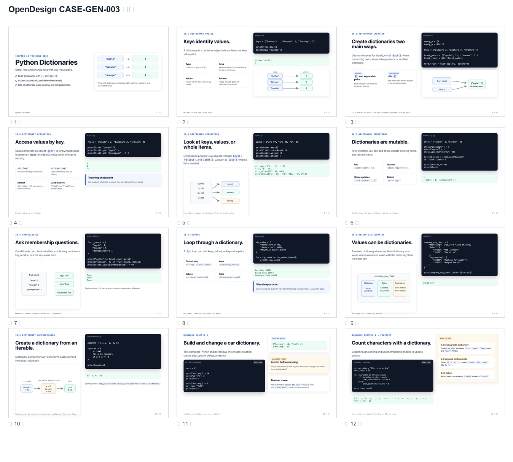 | 缺失 任务：课堂教学课件。结论：OpenAgents 批次未提供该用例产物。 |
| CASE-GEN-004 传播活动简报 基于世界食品安全日传播工具包 PDF，生成机构/公共传播简报 PPT。受众是活动、利益相关方和传播团队，要求权威但易懂，覆盖目标、关键信息、行动建议、传播资产和执行要点。 | 历史产物 / 按 v0.2 折算 6/6 任务：公共传播简报。结论：历史产物；按 v0.2 折算。 PPTX 未公开 · 截图 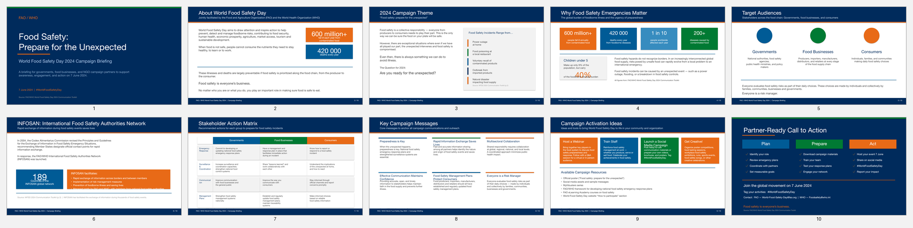 | 无 PPTX / 额度不足 任务：公共传播简报。结论：未产出 PPTX；受额度限制。 日志未公开 | 正式流程新跑结果 6/6 任务：公共传播简报。结论：完成关键要求。 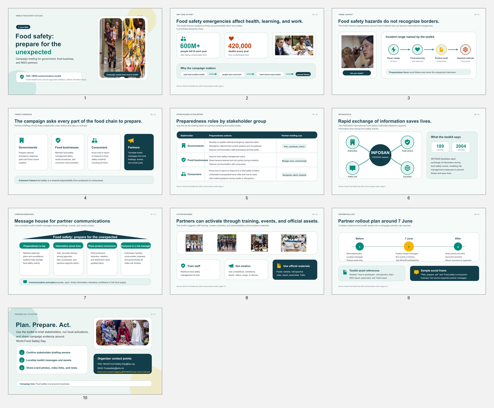 | 缺失 任务：公共传播简报。结论：当前只要求 Codex GLM5.2 对照组跑 CASE-GEN-001 和 CASE-GEN-002；该用例尚未运行。 | 缺失 任务：公共传播简报。结论：当前只要求 OpenClaw 跑 CASE-GEN-001 和 CASE-GEN-002；该用例尚未运行。 | 历史产物 / 按 v0.2 折算 6/6 任务：公共传播简报。结论：历史产物；按 v0.2 折算。 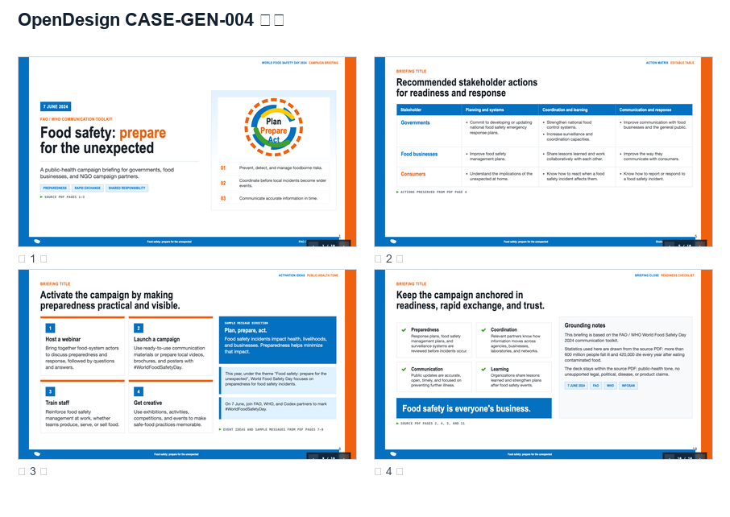 | 缺失 任务：公共传播简报。结论：OpenAgents 批次未提供该用例产物。 |
| CASE-GEN-005 学术论文报告 基于 ECCV 学术论文 PDF，生成研究生读书会/会议报告 PPT。要求压缩问题、方法、实验、结果、局限和讨论，保留论文事实、图表/结果关系和学术语气。 | 历史产物 / 按 v0.2 折算 7/7 任务：学术论文报告。结论：历史产物；按 v0.2 折算。 PPTX 未公开 · 截图 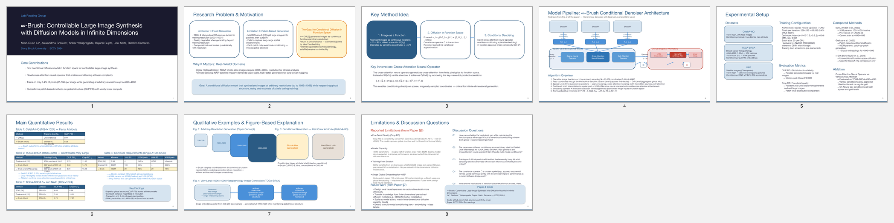 | 无 PPTX / 额度不足 任务：学术论文报告。结论：未产出 PPTX；受额度限制。 日志未公开 | 正式流程新跑结果 7/7 任务：学术论文报告。结论：完成关键要求。 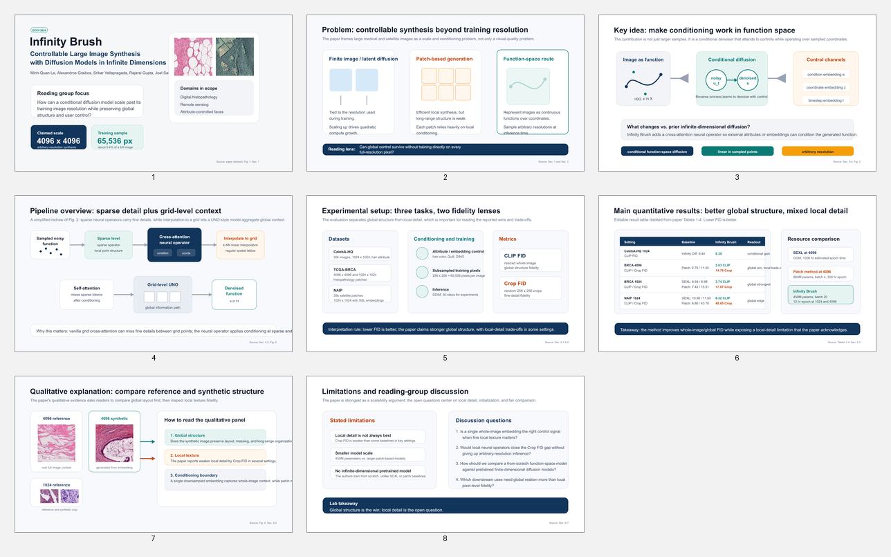 | 缺失 任务：学术论文报告。结论：当前只要求 Codex GLM5.2 对照组跑 CASE-GEN-001 和 CASE-GEN-002；该用例尚未运行。 | 缺失 任务：学术论文报告。结论：当前只要求 OpenClaw 跑 CASE-GEN-001 和 CASE-GEN-002；该用例尚未运行。 | 历史产物 / 按 v0.2 折算 6/7 任务：学术论文报告。结论：历史产物；按 v0.2 折算。 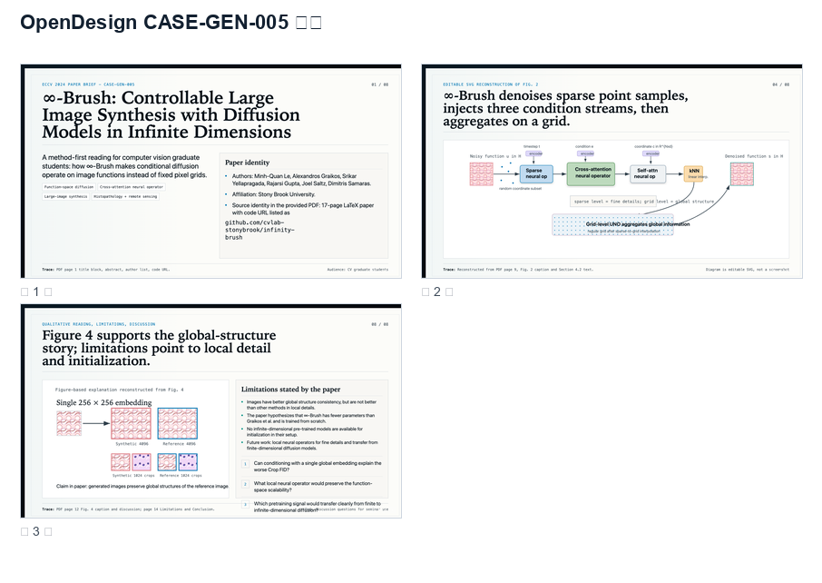 | 缺失 任务：学术论文报告。结论：OpenAgents 批次未提供该用例产物。 |
| CASE-EDIT-006 局部字体修改 在给定 PPTX 中只修改目标页的局部字体排版：按指定页/标题或文本区域调整字号/排版，同时必须保持非目标页和非目标元素稳定，不新增/删除页面。 | 历史产物 / 按 v0.2 折算 3/3 任务：局部字体编辑。结论：历史产物；按 v0.2 折算。 PPTX 未公开 · 前后对比 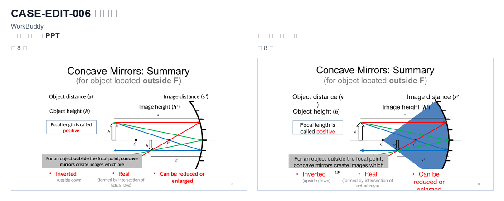 | v0.2 新跑结果 3/3 任务：局部字体编辑。结论：完成关键要求。 PPTX 未公开 · 前后对比  | 正式原生编辑流程新跑结果 3/3 任务：局部字体编辑。结论：完成关键要求。 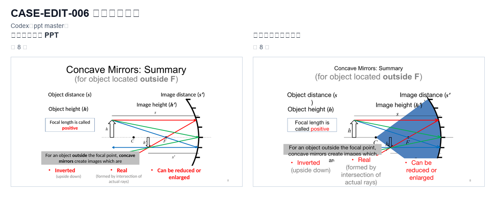 | 缺失 任务：局部字体编辑。结论：当前只要求 Codex GLM5.2 对照组跑 CASE-GEN-001 和 CASE-GEN-002；该用例尚未运行。 | 缺失 任务：局部字体编辑。结论：当前只要求 OpenClaw 跑 CASE-GEN-001 和 CASE-GEN-002；该用例尚未运行。 | 历史产物 / 按 v0.2 折算 3/3 任务：局部字体编辑。结论：历史产物；按 v0.2 折算。 PPTX 未公开 · 前后对比 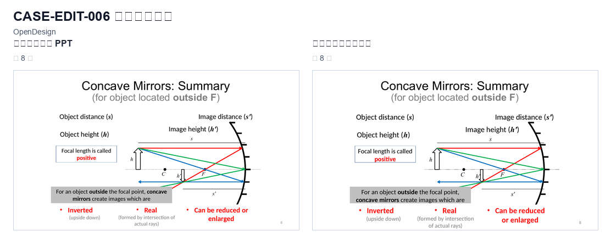 | 缺失 任务：局部字体编辑。结论：OpenAgents 批次未提供该用例产物。 |
| CASE-EDIT-007 文本转图表 把页面内的文本数据转换为原生可编辑的 PowerPoint 折线图。要求数据、年份、序列、坐标轴/标签准确，图表不是截图，视觉上与原 PPT 协调，并保持非目标内容不被破坏。 | 历史产物 / 按 v0.2 折算 6/6 任务：文本转原生图表。结论：历史产物；按 v0.2 折算。 PPTX 未公开 · 前后对比  | v0.2 新跑结果 6/6 任务：文本转原生图表。结论：完成关键要求。 PPTX 未公开 · 前后对比 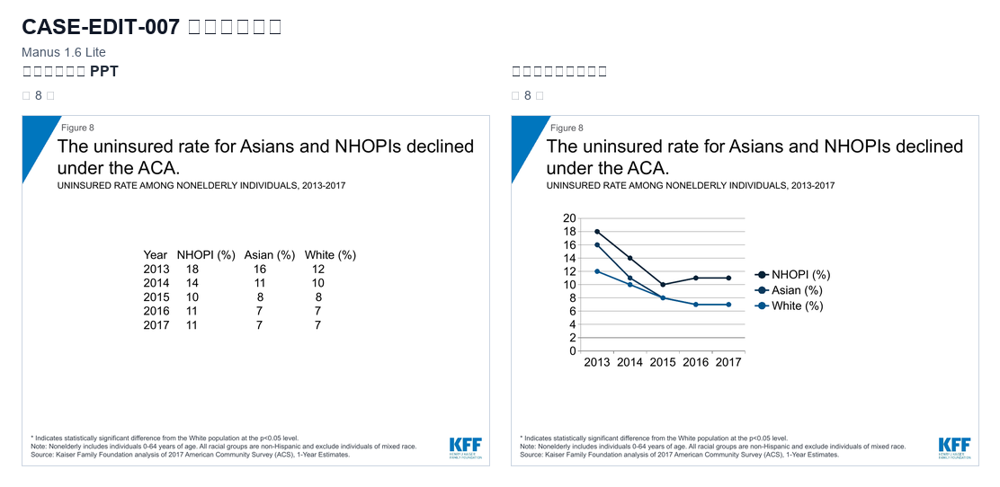 | 正式原生编辑流程新跑结果 6/6 任务：文本转原生图表。结论：完成关键要求。  | 缺失 任务：文本转原生图表。结论：当前只要求 Codex GLM5.2 对照组跑 CASE-GEN-001 和 CASE-GEN-002；该用例尚未运行。 | 缺失 任务：文本转原生图表。结论：当前只要求 OpenClaw 跑 CASE-GEN-001 和 CASE-GEN-002；该用例尚未运行。 | 历史产物 / 按 v0.2 折算 5/6 任务：文本转原生图表。结论：历史产物；按 v0.2 折算。 PPTX 未公开 · 前后对比  | 缺失 任务：文本转原生图表。结论：OpenAgents 批次未提供该用例产物。 |
| CASE-EDIT-008R 原始指标仪表盘 把一个原始指标堆叠/仪表盘草稿 PPTX 改造成高管仪表盘。要求从表格数据生成更高级的数据可视化布局，包含 KPI、趋势、分群、留存、收入等核心洞察；图表/表格必须是原生可编辑对象，不能只做简单换色。 | v0.2 新跑结果 8/8 任务：高管仪表盘重构。结论：完成关键要求。 PPTX 未公开 · 前后对比 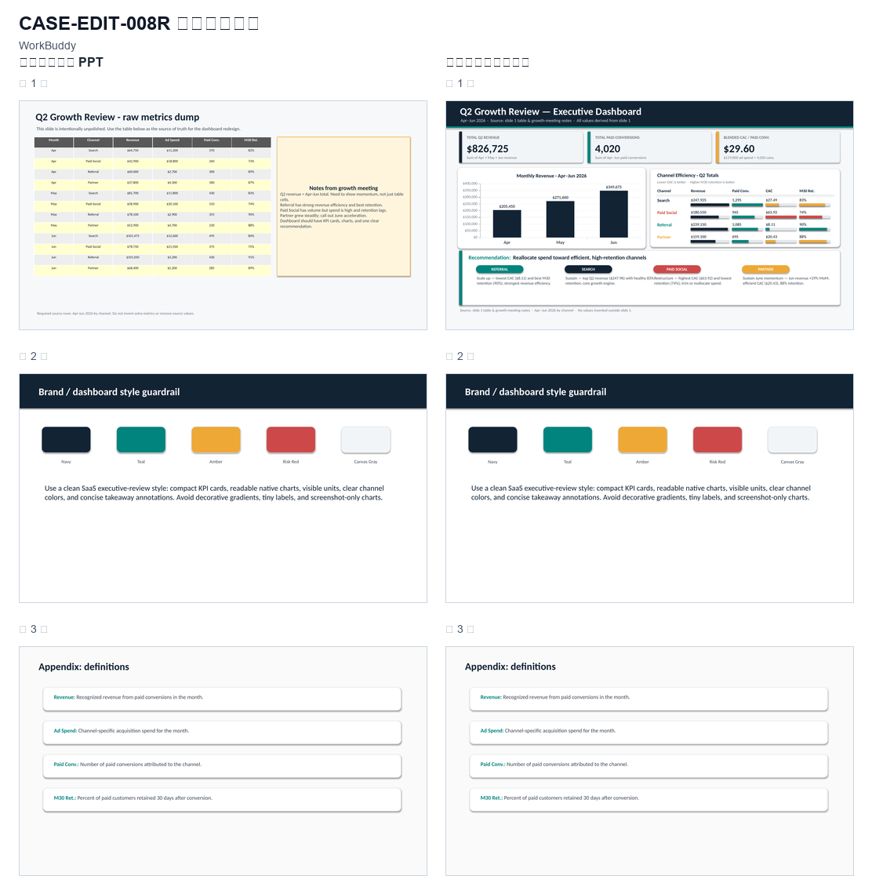 | 无 PPTX / 额度不足 任务：高管仪表盘重构。结论：未产出 PPTX；受额度限制。 日志未公开 | 正式原生编辑流程新跑结果 8/8 任务：高管仪表盘重构。结论：完成关键要求。  | 缺失 任务：高管仪表盘重构。结论：当前只要求 Codex GLM5.2 对照组跑 CASE-GEN-001 和 CASE-GEN-002；该用例尚未运行。 | 缺失 任务：高管仪表盘重构。结论：当前只要求 OpenClaw 跑 CASE-GEN-001 和 CASE-GEN-002；该用例尚未运行。 | v0.2 新跑结果 8/8 任务：高管仪表盘重构。结论：内容可用；PPTX 可编辑性不足。 PPTX 未公开 · 前后对比 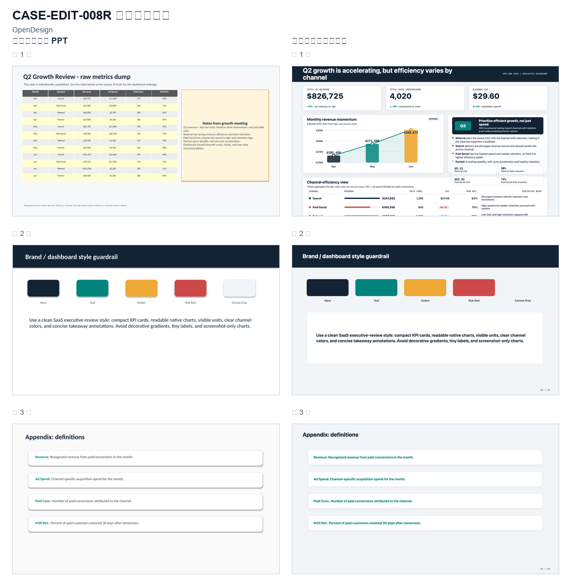 | 缺失 任务：高管仪表盘重构。结论：OpenAgents 批次未提供该用例产物。 |
| CASE-EDIT-009 视觉重设计 把教育类岩石识别 PPTX 做视觉 redesign。要求提升 diagram craft、层级、布局和教学可读性，同时保持原有内容语义，不做无关主题大改。 | 历史产物 / 按 v0.2 折算 4/5 任务：视觉重设计。结论：历史产物；按 v0.2 折算。 PPTX 未公开 · 前后对比  | 无 PPTX 任务：视觉重设计。结论：未产出可评分 PPTX。 日志未公开 | 正式原生编辑流程新跑结果 5/5 任务：视觉重设计。结论：完成关键要求。  | 缺失 任务：视觉重设计。结论：当前只要求 Codex GLM5.2 对照组跑 CASE-GEN-001 和 CASE-GEN-002；该用例尚未运行。 | 缺失 任务：视觉重设计。结论：当前只要求 OpenClaw 跑 CASE-GEN-001 和 CASE-GEN-002；该用例尚未运行。 | 历史产物 / 按 v0.2 折算 4/5 任务：视觉重设计。结论：历史产物；按 v0.2 折算。 PPTX 未公开 · 前后对比  | 缺失 任务：视觉重设计。结论：OpenAgents 批次未提供该用例产物。 |
| CASE-EDIT-010 截图重建为可编辑对象 把 title slide 中的截图式/扁平内容重建为可编辑 PowerPoint 对象。要求 title、subtitle、学校文字、crest/logo 等成为独立可编辑元素，视觉尽量贴近原图。 | 历史产物 / 按 v0.2 折算 1/4 任务：截图重建为可编辑页。结论：历史产物；按 v0.2 折算。 PPTX 未公开 · 前后对比 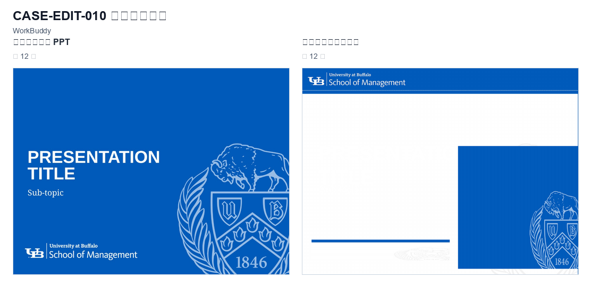 | 无 PPTX / 额度不足 任务：截图重建为可编辑页。结论：未产出 PPTX；受额度限制。 日志未公开 | 正式原生编辑流程新跑结果 4/4 任务：截图重建为可编辑页。结论：内容可用；PPTX 可编辑性不足。 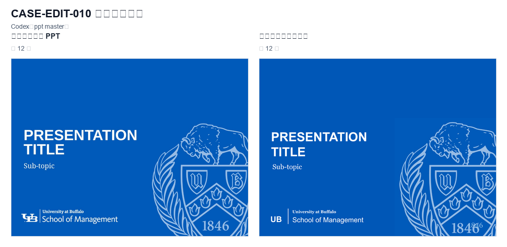 | 缺失 任务：截图重建为可编辑页。结论：当前只要求 Codex GLM5.2 对照组跑 CASE-GEN-001 和 CASE-GEN-002；该用例尚未运行。 | 缺失 任务：截图重建为可编辑页。结论：当前只要求 OpenClaw 跑 CASE-GEN-001 和 CASE-GEN-002；该用例尚未运行。 | 历史产物 / 按 v0.2 折算 4/4 任务：截图重建为可编辑页。结论：历史产物；按 v0.2 折算。 PPTX 未公开 · 前后对比  | 缺失 任务：截图重建为可编辑页。结论：OpenAgents 批次未提供该用例产物。 |
| CASE-EDIT-011 多轮级联编辑 多轮级联编辑：在现有 PPT 上连续执行图表、布局、参考文献/进度条/引用等局部修改；每一轮必须保留前序修改，不应破坏页数、主题或非目标元素。 | 历史产物 / 按 v0.2 折算 7/8 任务：多轮级联编辑。结论：历史产物；按 v0.2 折算。 PPTX 未公开 · 前后对比 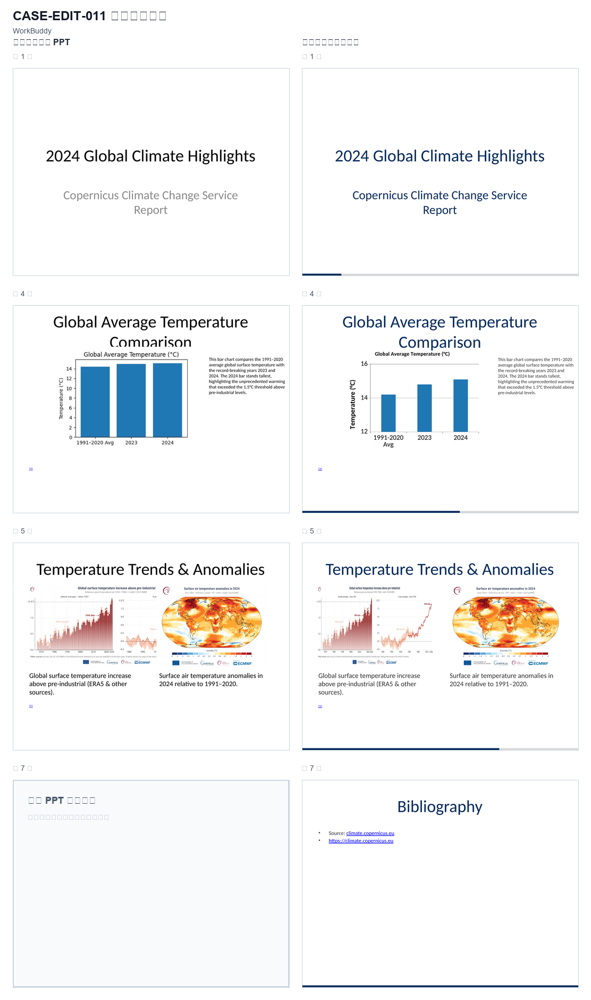 | 仅部分结果 任务：多轮级联编辑。结论：只有部分结果；不是完整最终稿。  | 正式原生编辑流程新跑结果 8/8 任务：多轮级联编辑。结论：完成关键要求。  | 缺失 任务：多轮级联编辑。结论：当前只要求 Codex GLM5.2 对照组跑 CASE-GEN-001 和 CASE-GEN-002；该用例尚未运行。 | 缺失 任务：多轮级联编辑。结论：当前只要求 OpenClaw 跑 CASE-GEN-001 和 CASE-GEN-002；该用例尚未运行。 | 历史产物 / 按 v0.2 折算 7/8 任务：多轮级联编辑。结论：历史产物；按 v0.2 折算。 PPTX 未公开 · 前后对比 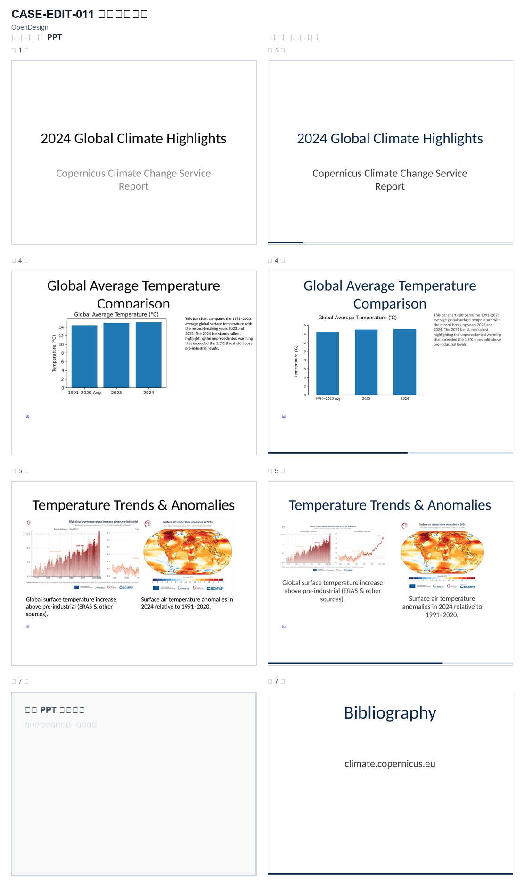 | 缺失 任务：多轮级联编辑。结论：OpenAgents 批次未提供该用例产物。 |
| CASE-MT-012 PPTC 多轮编辑 4 轮 PPTC 风格编辑任务，页码索引从 0 开始：改指定标题字体颜色、改背景、调整图片旋转/宽度，最后把第 3 号页面的第 0 张图片旋转更新为 60 度而不是叠加旋转；所有前序修改保持稳定。 | 历史产物 / 按 v0.2 折算 4/4 任务：PPTC 四轮编辑。结论：历史产物；按 v0.2 折算。 PPTX 未公开 · 前后对比 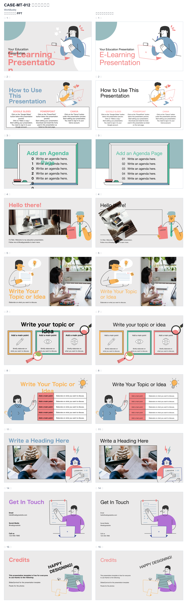 | 无 PPTX / 额度不足 任务：PPTC 四轮编辑。结论：未产出 PPTX；受额度限制。 日志未公开 | 正式原生编辑流程新跑结果 4/4 任务：PPTC 四轮编辑。结论：完成关键要求。 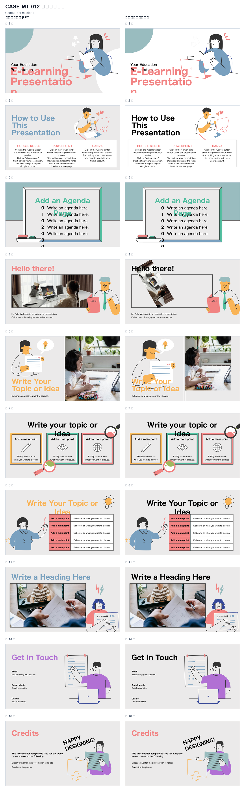 | 缺失 任务：PPTC 四轮编辑。结论：当前只要求 Codex GLM5.2 对照组跑 CASE-GEN-001 和 CASE-GEN-002；该用例尚未运行。 | 缺失 任务：PPTC 四轮编辑。结论：当前只要求 OpenClaw 跑 CASE-GEN-001 和 CASE-GEN-002；该用例尚未运行。 | 历史产物 / 按 v0.2 折算 4/4 任务：PPTC 四轮编辑。结论：历史产物；按 v0.2 折算。 PPTX 未公开 · 前后对比 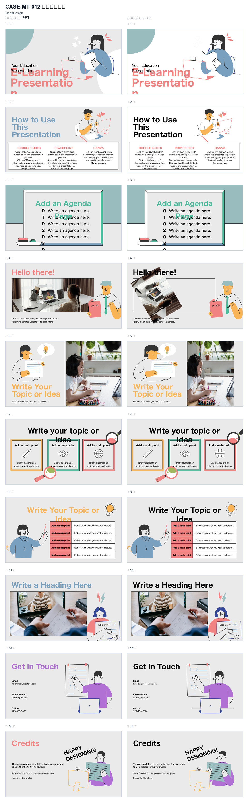 | 缺失 任务：PPTC 四轮编辑。结论：OpenAgents 批次未提供该用例产物。 |
| CASE-GEN-013 凹面镜光路 基于纯 Markdown 源材料生成凹面镜光路复杂概念讲解 PPT。重点测试物理原理、光线图、符号/公式与图形一致性，以及面向学习者的解释层次。 | v0.2 新跑结果 5/5 任务：凹面镜技术讲解。结论：内容可用；PPTX 可编辑性不足。 PPTX 未公开 · 截图 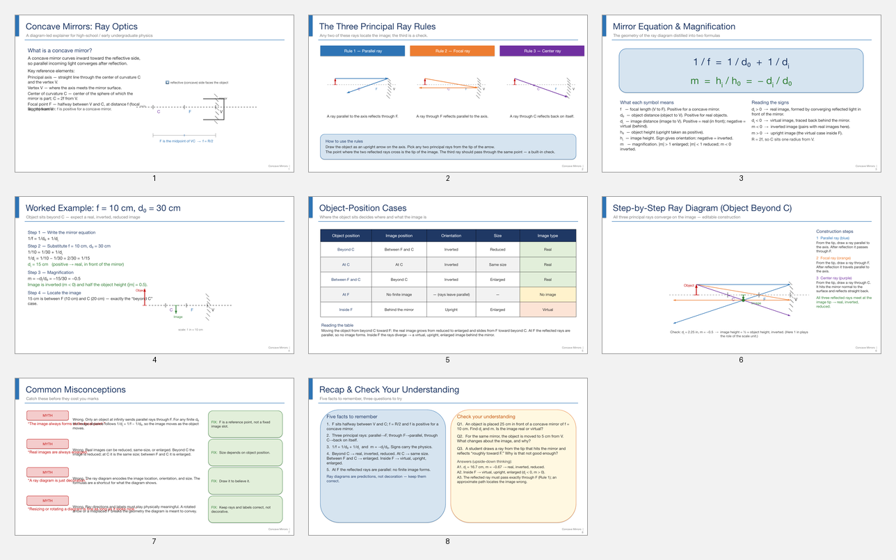 | 无 PPTX / 额度不足 任务：凹面镜技术讲解。结论：未产出 PPTX；受额度限制。 日志未公开 | 正式流程新跑结果 5/5 任务：凹面镜技术讲解。结论：完成关键要求。 PPTX 未公开 · 截图 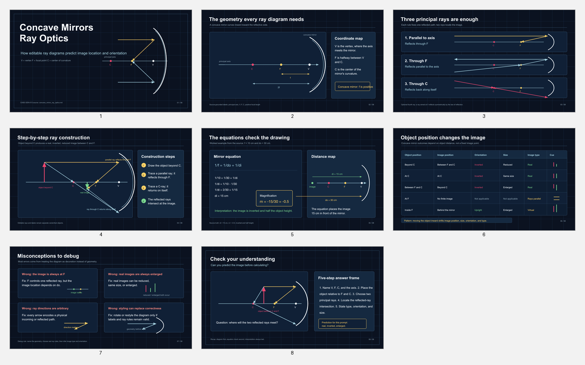 | 缺失 任务：凹面镜技术讲解。结论：当前只要求 Codex GLM5.2 对照组跑 CASE-GEN-001 和 CASE-GEN-002；该用例尚未运行。 | 缺失 任务：凹面镜技术讲解。结论：当前只要求 OpenClaw 跑 CASE-GEN-001 和 CASE-GEN-002；该用例尚未运行。 | v0.2 新跑结果 5/5 任务：凹面镜技术讲解。结论：内容可用；PPTX 可编辑性不足。 PPTX 未公开 · 截图 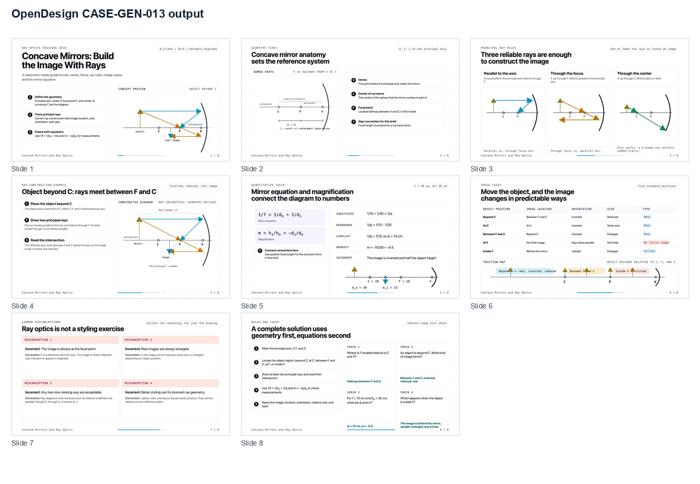 | 缺失 任务：凹面镜技术讲解。结论：OpenAgents 批次未提供该用例产物。 |
| CASE-GEN-014 热泵系统讲解 基于纯 Markdown 源材料生成蒸汽压缩热泵工程结构讲解 PPT。重点测试组件关系、状态流、模式对比、能量流与结构图表达。 | v0.2 新跑结果 5/5 任务：热泵系统讲解。结论：完成关键要求。 PPTX 未公开 · 截图  | 无 PPTX 任务：热泵系统讲解。结论：未产出可评分 PPTX。 日志未公开 | 正式流程新跑结果 5/5 任务：热泵系统讲解。结论：完成关键要求。 PPTX 未公开 · 截图 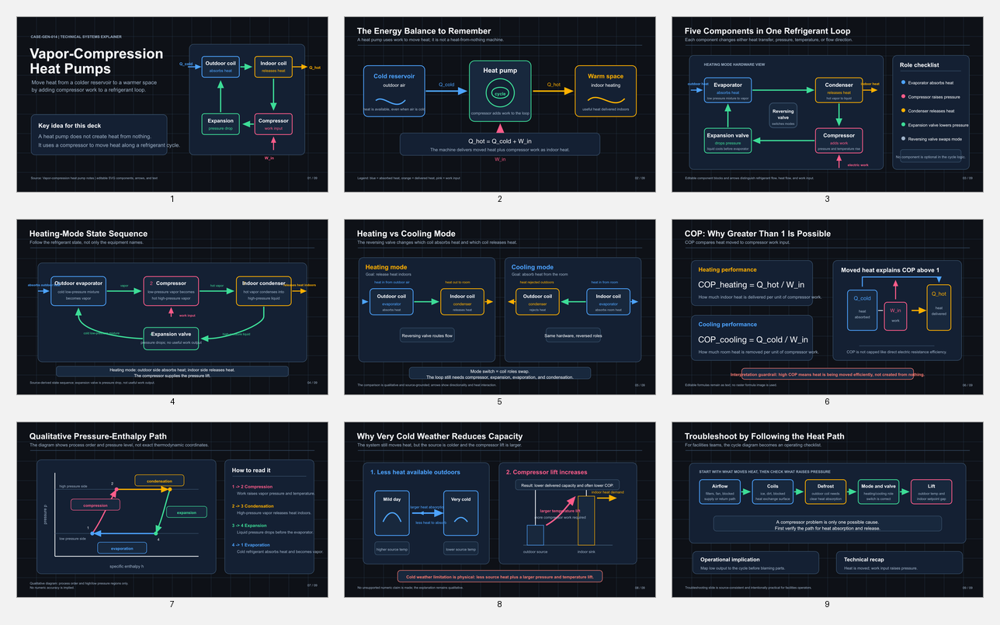 | 缺失 任务：热泵系统讲解。结论：当前只要求 Codex GLM5.2 对照组跑 CASE-GEN-001 和 CASE-GEN-002；该用例尚未运行。 | 缺失 任务：热泵系统讲解。结论：当前只要求 OpenClaw 跑 CASE-GEN-001 和 CASE-GEN-002；该用例尚未运行。 | v0.2 新跑结果 5/5 任务：热泵系统讲解。结论：内容可用；PPTX 可编辑性不足。 PPTX 未公开 · 截图  | 缺失 任务：热泵系统讲解。结论：OpenAgents 批次未提供该用例产物。 |
| CASE-GEN-015 Transformer 自注意力 基于纯 Markdown 源材料生成 Transformer 自注意力抽象算法讲解 PPT。重点测试矩阵流程、Q/K/V、注意力热力图、机制解释和抽象概念可视化。 | v0.2 新跑结果 5/5 任务：自注意力机制讲解。结论：完成关键要求。 PPTX 未公开 · 截图 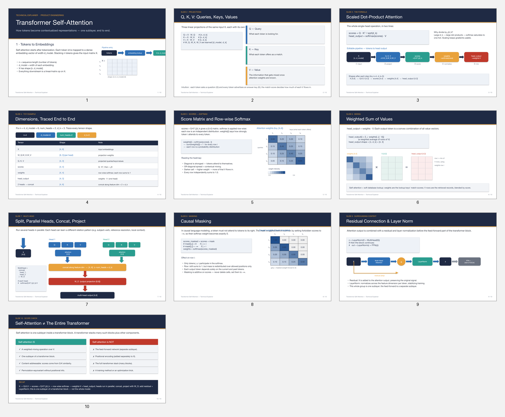 | 无 PPTX / 额度不足 任务：自注意力机制讲解。结论：未产出 PPTX；受额度限制。 日志未公开 | 正式流程新跑结果 5/5 任务：自注意力机制讲解。结论：完成关键要求。 PPTX 未公开 · 截图 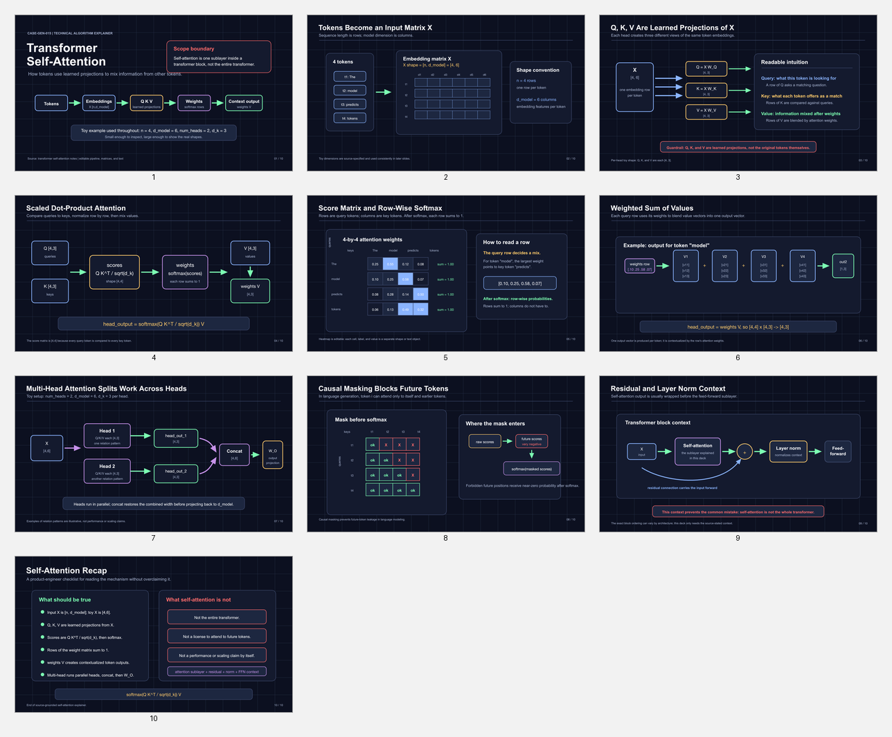 | 缺失 任务：自注意力机制讲解。结论：当前只要求 Codex GLM5.2 对照组跑 CASE-GEN-001 和 CASE-GEN-002；该用例尚未运行。 | 缺失 任务：自注意力机制讲解。结论：当前只要求 OpenClaw 跑 CASE-GEN-001 和 CASE-GEN-002；该用例尚未运行。 | v0.2 新跑结果 5/5 任务：自注意力机制讲解。结论：内容可用；PPTX 可编辑性不足。 PPTX 未公开 · 截图  | 缺失 任务：自注意力机制讲解。结论：OpenAgents 批次未提供该用例产物。 |
| CASE-GEN-016 产品增长指标 基于 CSV 和说明文档生成产品增长指标复盘 PPT。重点测试数据分析、图表选择、多指标推导、基于来源的结论和仪表盘/叙事组织。 | v0.2 新跑结果 5/5 任务：增长数据复盘。结论：完成关键要求。 PPTX 未公开 · 截图  | 无 PPTX / 额度不足 任务：增长数据复盘。结论：未产出 PPTX；受额度限制。 日志未公开 | 正式流程新跑结果 5/5 任务：增长数据复盘。结论：完成关键要求。 PPTX 未公开 · 截图  | 缺失 任务：增长数据复盘。结论：当前只要求 Codex GLM5.2 对照组跑 CASE-GEN-001 和 CASE-GEN-002；该用例尚未运行。 | 缺失 任务：增长数据复盘。结论：当前只要求 OpenClaw 跑 CASE-GEN-001 和 CASE-GEN-002；该用例尚未运行。 | v0.2 新跑结果 5/5 任务：增长数据复盘。结论：内容可用；PPTX 可编辑性不足。 PPTX 未公开 · 截图  | 缺失 任务：增长数据复盘。结论：OpenAgents 批次未提供该用例产物。 |
| CASE-GEN-017 结账实验复盘 基于 CSV 和说明文档生成结账页改版实验复盘 PPT。重点测试 A/B 测试决策叙事、分群视图、护栏指标、统计/业务解释和可视化质量。 | v0.2 新跑结果 5/5 任务：A/B 实验复盘。结论：部分内容缺少来源支撑。 PPTX 未公开 · 截图 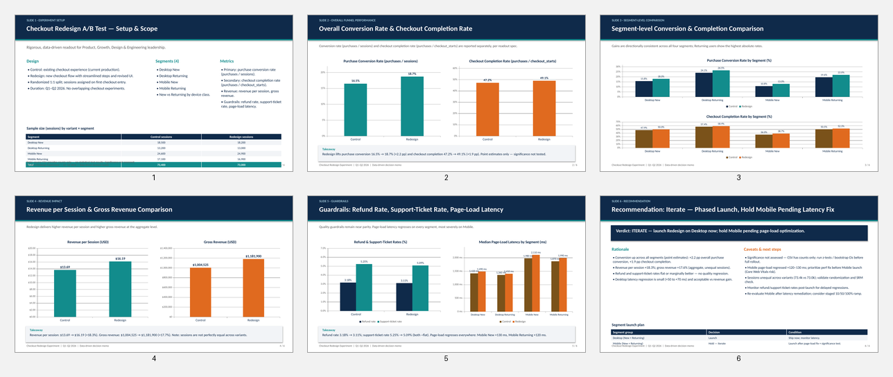 | 无 PPTX / 额度不足 任务：A/B 实验复盘。结论：未产出 PPTX；受额度限制。 日志未公开 | 正式流程新跑结果 5/5 任务：A/B 实验复盘。结论：部分内容缺少来源支撑。 PPTX 未公开 · 截图 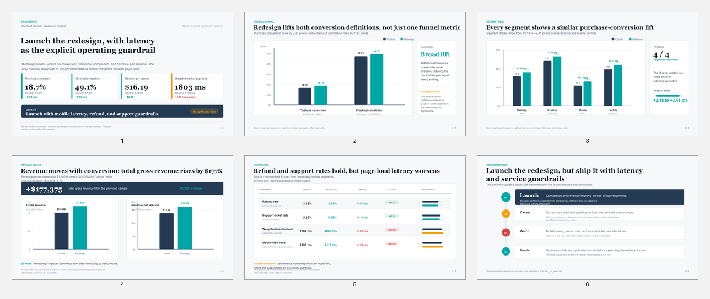 | 缺失 任务：A/B 实验复盘。结论：当前只要求 Codex GLM5.2 对照组跑 CASE-GEN-001 和 CASE-GEN-002；该用例尚未运行。 | 缺失 任务：A/B 实验复盘。结论：当前只要求 OpenClaw 跑 CASE-GEN-001 和 CASE-GEN-002；该用例尚未运行。 | v0.2 新跑结果 5/5 任务：A/B 实验复盘。结论：内容可用；PPTX 可编辑性不足。 PPTX 未公开 · 截图  | 缺失 任务：A/B 实验复盘。结论：OpenAgents 批次未提供该用例产物。 |
{kind=link}
{kind=link}
{kind=link}
{kind=link}
{kind=link}
{kind=link}
{kind=link}
{kind=link}
{kind=link}
{kind=link}
{kind=link}
{kind=link}
{kind=link}
{kind=link}
{kind=link}
{kind=link}
{kind=link}
{kind=link}
{kind=link}
{kind=link}
{kind=link}
{kind=link}
{kind=link}
{kind=link}
{kind=link}
{kind=link}
{kind=link}
{kind=link}
{kind=link}
{kind=link}
{kind=link}
{kind=link}
{kind=link}
{kind=link}
CASE-GEN-001 · 商业计划书
最高 10 分
原始提示词
请基于我上传的 Fancy's Foods business plan PDF，生成一份 10 页的投资人路演 PPT。 目标听众：早期投资人和潜在渠道合作方。 输出语言：英文。 风格：professional, data-driven, clean investor pitch。 必须覆盖： 1. problem / market context 2. product and flavored whipped cream differentiation 3. customer validation and restaurant background 4. target market and phased expansion 5. distribution strategy: frozen tubs and pressurized cans 6. competitive advantage 7. manufacturing / partnership plan 8. financial projections, including positive cash flow and 10.88% ROE in year one if supported by the source 9. risks and contingency plan 10. investment / partnership ask 要求： - 所有事实、数字、产品品类、财务指标必须来自 PDF，不要自行编造。 - 至少 3 页要把 source 中的数字做成可编辑 chart/table，而不是截图。 - 每页标题要能串成完整 pitch narrative。 - 输出一个可编辑 .pptx。
输入：SampleFoodBusinessPlanOklahomaState.pdf
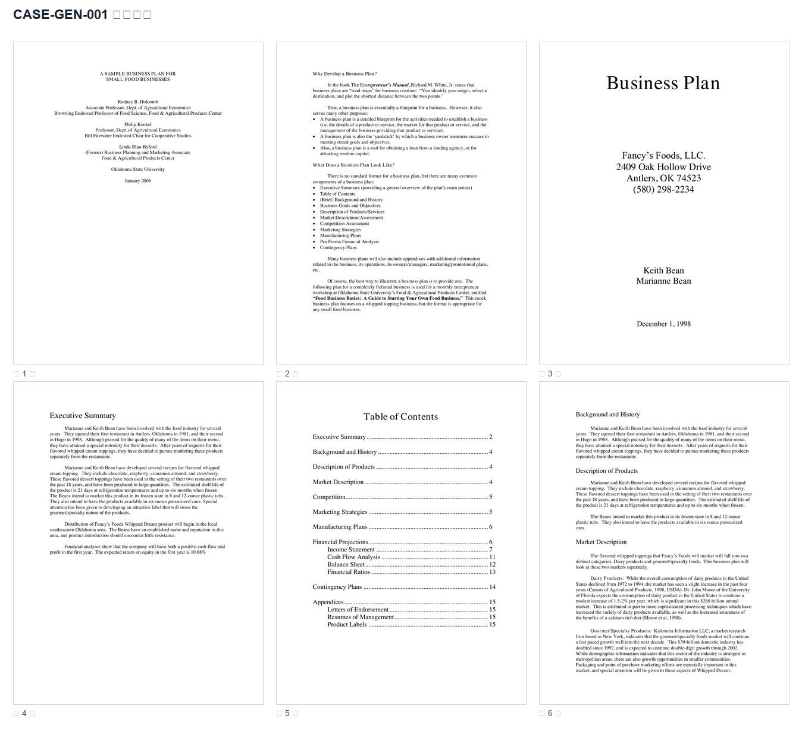
v0.2 打分项
| G-001 | 事实依据 | PPT 是否始终把 Fancy's Foods / Whipped Dream 识别为调味奶油顶料业务，并基于来源商业计划书把输出定位为投资人或合作伙伴路演？ |
| G-002 | 事实依据 | 产品口味、包装形式、保质期/验证主张和餐厅背景是否可追溯到 Fancy's Foods PDF，且没有未经支持的牵引力或渠道主张？ |
| G-003 | 事实依据 | 市场扩张、分销、制造、财务和风险表述是否限制在 PDF 支持的事实和数字内，包括使用到的一年正现金流和 10.88% 股本回报率？ |
| C-001 | 覆盖度 | 10 页投资人 PPT 是否实质覆盖全部 10 个指定简报部分？ |
| N-001 | 叙事 | 页标题和内容是否形成连贯的投资人路演叙事，而不是来源摘要顺序或泛泛章节标签？ |
| V-001 | 视觉 | 商业计划 PPT 是否保持投资人级别的视觉层级、可读密度、一致设计系统，并且没有明显空白、溢出、裁切或重叠问题？ |
| CH-001 | 图表 | 商业计划 PPT 是否至少有 3 页包含基于来源数字的可编辑图表或表格，而不是截图或装饰性占位？ |
| CH-002 | 图表 | 财务和数字图表/表格的值是否有来源支持或可直接推导，并带有有意义标签、单位和投资人相关结论？ |
| E-001 | 可编辑性 | 输出是否是真正可编辑的 PPTX，标题、正文、图表/表格和主要形状是独立可编辑对象，而不是扁平化页面图片？ |
| EF-001 | 效率 | 智能体是否在生成预算内产出完整有效 PPTX，且无需评测端修复或反复重跑？ |
用例结果表
| 智能体 | 语言模型（主键） | 图像模型（主键） | 耗时 | 令牌消耗/费用 | 产出 | 综合评分 | 详细评分（评估报告） | 截图 |
|---|---|---|---|---|---|---|---|---|
| WorkBuddy | Auto | Auto | 2分27秒 | 未记录 | PPTX 未公开 | 8/10 | md | 截图 |
| Manus 1.6 Lite | 1.6 lite | unknown | 未记录 | 未记录 | PPTX 未公开 | 9/10 | md | 截图 |
| Codex（ppt master） | gpt-5.5 extra high | nb | 未记录 | 未记录 | PPTX 未公开 | 9/10 | md | 截图 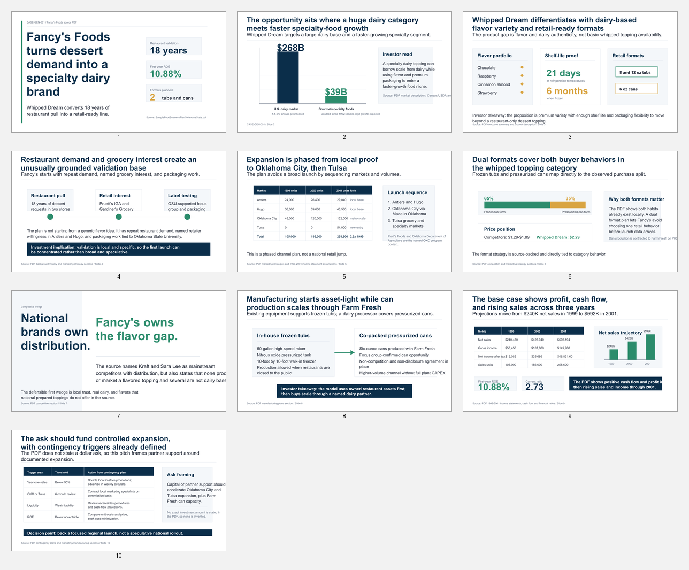 |
| Codex（ppt master glm5.2） | glm5.2 | nb | 17分24秒 | 未记录 | PPTX 未公开 | 10/10 | md | 截图 |
| OpenClaw（ppt master glm5.2） | glm5.2 | nb | 19分7秒 | 未记录 | PPTX 未公开 | 10/10 | md | 截图 |
| OpenDesign | default | unknown | 未记录 | 未记录 | PPTX 未公开 | 9/10 | md | 截图 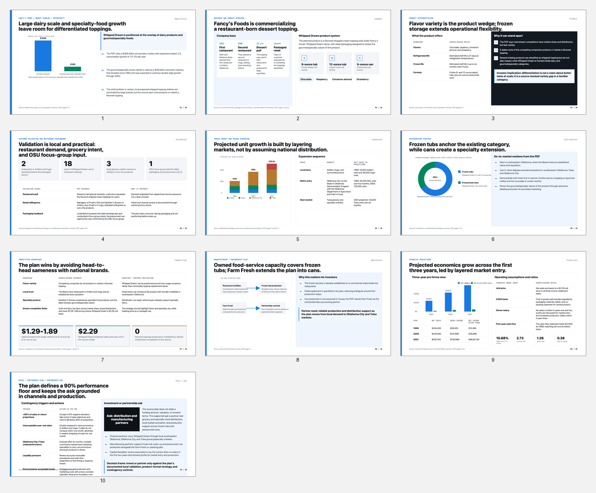 |
| OpenAgents（ppt master glm5.2） | glm5.2 | nb | 未记录 | 未记录 | PPTX 未公开 | 9/10 | md | 截图 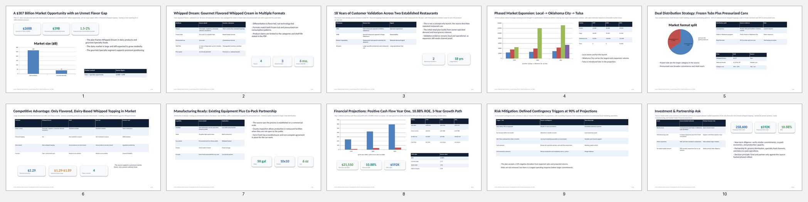 |
{kind=link}
{kind=link}
{kind=link}
CASE-GEN-002 · 产品发布
最高 8 分
原始提示词
请基于我上传的 Apple iPhone 16 Pro / iPhone 16 Pro Max 发布资料，生成一份 9 页产品发布 PPT。 目标听众：消费者科技媒体、渠道伙伴、销售团队。 输出语言：英文。 风格：premium product launch, crisp, visually strong。 必须覆盖： 1. product positioning 2. Apple Intelligence 3. A18 Pro chip 4. larger displays 5. Camera Control 6. pro camera capabilities 7. battery-life improvement 8. design / durability / environment 9. pricing / pre-order call to action if source supports it 要求： - 不要使用 PDF 以外的未经验证信息。 - 至少 1 页做 feature comparison table。 - 至少 1 页用视觉方式表达 camera / creativity use cases。 - 输出一个可编辑 .pptx。
输入：Apple_debuts_iPhone_16_Pro_and_iPhone_16_Pro_Max_A.pdf
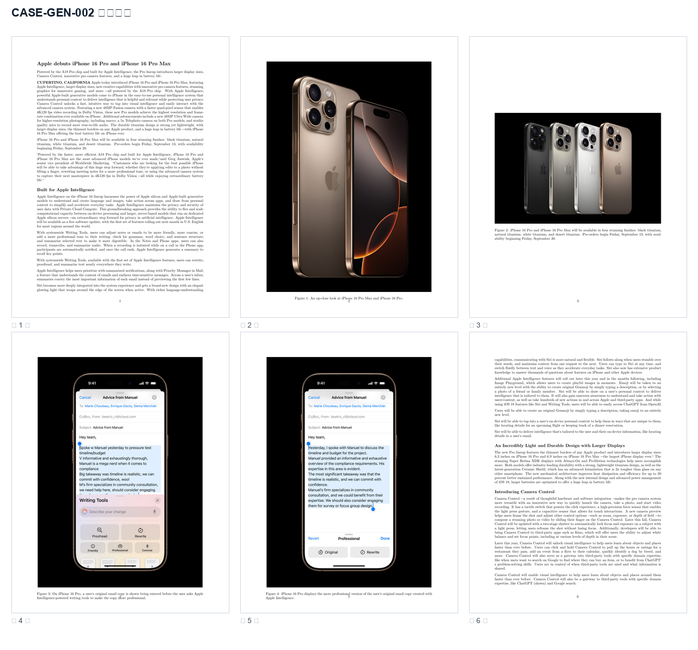
v0.2 打分项
| G-004 | 事实依据 | PPT 是否正确把 Apple iPhone 16 Pro 和 iPhone 16 Pro Max 作为发布主题，并且只使用来源支持的产品事实？ |
| G-005 | 事实依据 | Apple Intelligence、A18 Pro、Camera Control、专业相机、电池、钛金属和环保相关表述是否遵守来源约束，且没有夸大可用性或能力？ |
| C-002 | 覆盖度 | 产品发布 PPT 是否覆盖 Apple 发布要求的定位、Apple Intelligence、A18 Pro、相机、显示屏、价格/上市、环保、受众和竞争框架？ |
| N-002 | 叙事 | PPT 是否讲出高级产品发布故事，把受众、功能层级和购买/定位逻辑连接起来？ |
| V-002 | 视觉 | 产品发布 PPT 是否使用高级、产品相关的视觉层级和媒体/素材，适合 Apple 发布会场景？ |
| V-003 | 视觉 | 产品发布 PPT 是否跨页面保持字体、间距、颜色和规格/功能布局的一致与可读？ |
| CH-003 | 图表 | 产品发布 PPT 是否包含结构化、来源支持的功能对比或规格表，且没有编造竞品规格？ |
| E-002 | 可编辑性 | 产品发布文本、功能表/对比、主要形状和媒体位置是否在 PPTX 中可编辑？ |
用例结果表
| 智能体 | 语言模型（主键） | 图像模型（主键） | 耗时 | 令牌消耗/费用 | 产出 | 综合评分 | 详细评分（评估报告） | 截图 |
|---|---|---|---|---|---|---|---|---|
| WorkBuddy | Auto | Auto | 5分59秒 | 未记录 | PPTX 未公开 | 7/8 | md | 截图 |
| Manus 1.6 Lite | 1.6 lite | unknown | 未记录 | 未记录 | 日志未公开 | 无 PPTX | md | 日志未公开 |
| Codex（ppt master） | gpt-5.5 extra high | nb | 未记录 | 未记录 | PPTX 未公开 | 8/8 | md | 截图 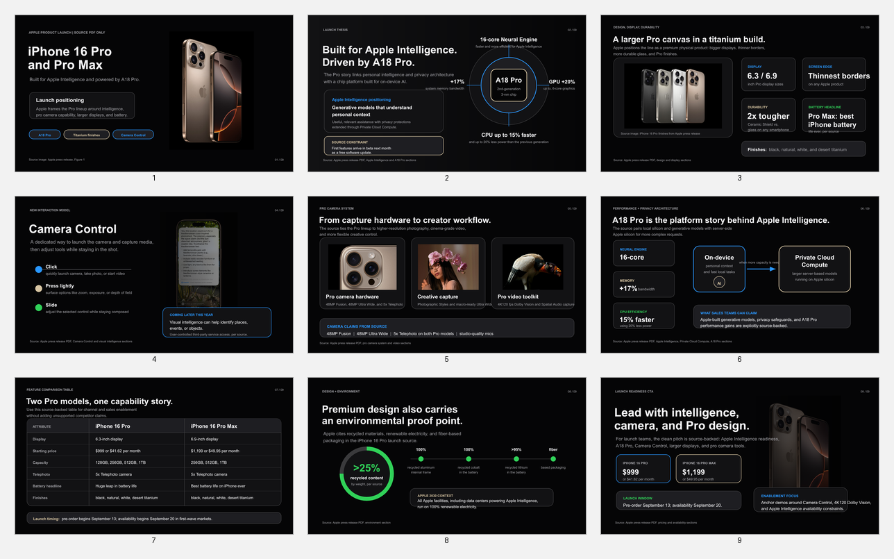 |
| Codex（ppt master glm5.2） | glm5.2 | nb | 19分10秒 | 未记录 | PPTX 未公开 | 8/8 | md | 截图 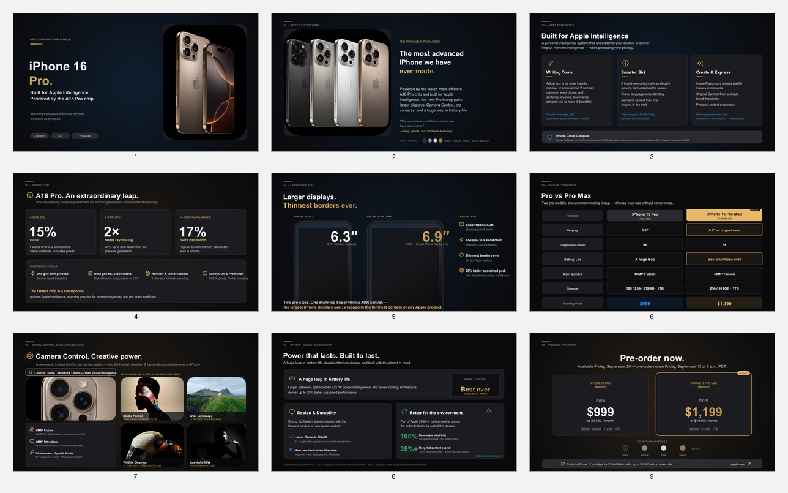 |
| OpenClaw（ppt master glm5.2） | glm5.2 | nb | 15分21秒 | 未记录 | PPTX 未公开 | 8/8 | md | 截图 |
| OpenDesign | default | unknown | 未记录 | 未记录 | 产出 | 7/8 | md | 截图 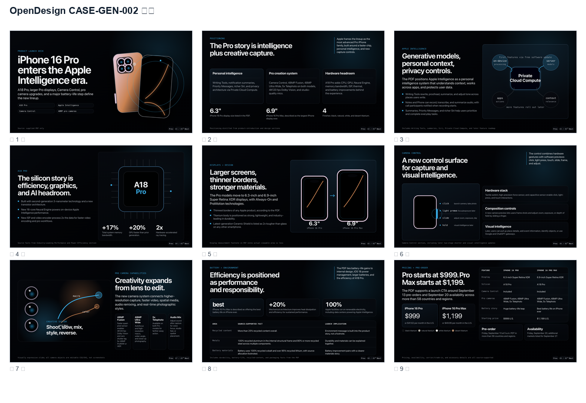 |
| OpenAgents（ppt master glm5.2） | glm5.2 | nb | 未记录 | 未记录 | PPTX 未公开 | 5/8 | md | 截图 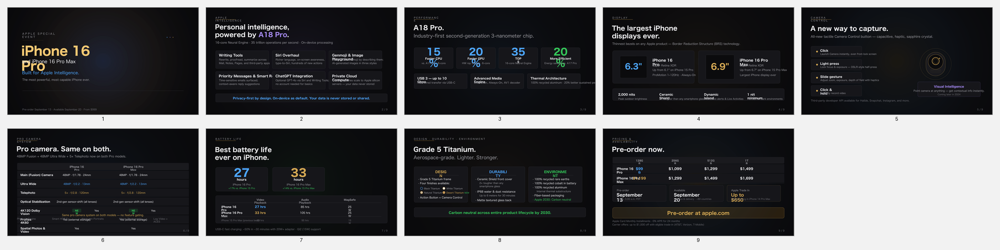 |
{kind=link}
{kind=link}
{kind=link}
{kind=link}
CASE-GEN-003 · 课程备课
最高 6 分
原始提示词
请基于我上传的 Python 教材 chapter 10，生成一份 12 页课堂教学 PPT，主题是 Python dictionaries。
目标听众：Python beginner students。
输出语言：英文。
风格：clear teaching deck, code-friendly, classroom-ready。
必须覆盖：
1. dictionary basics: key-value pairs
2. creating dictionaries with {} and dict()
3. accessing items
4. mutability
5. conditionals with dictionaries
6. looping / iteration
7. nested dictionaries
8. dictionary comprehension
9. at least 2 runnable code examples
10. at least 2 classroom exercises
要求：
- 不要把教材没有讲到的高级主题作为主线。
- 代码需要可读，等宽字体，不能溢出。
- 每个概念页都要有一个短例子或 visual explanation。
- 输出一个可编辑 .pptx。
输入：chapter-10.pdf
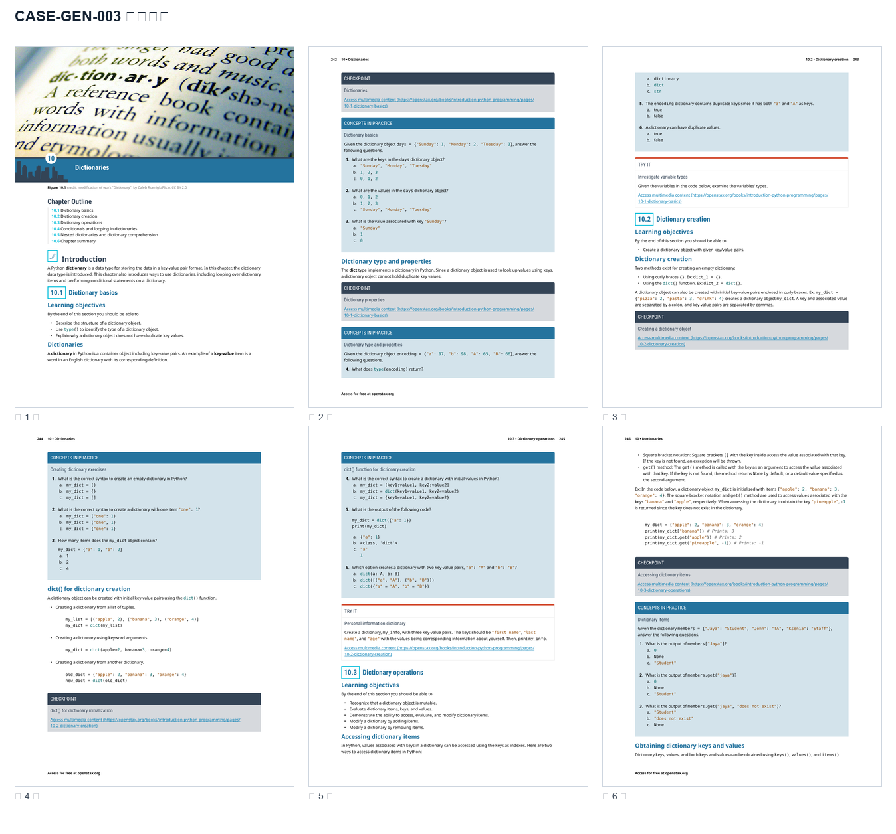
v0.2 打分项
| G-006 | 事实依据 | 课程 PPT 是否使用给定来源概念和有效 Python 语法准确解释 Python 字典？ |
| G-007 | 事实依据 | PPT 是否避免偏题或无来源支持的 Python 内容，并让例子扎根于字典课程？ |
| C-003 | 覆盖度 | 课程 PPT 是否覆盖从基础、例子、练习到学习者检查的字典课程路径？ |
| N-003 | 叙事 | 课程 PPT 是否从概念到例子再到练习逐步推进，让学习者能跟上？ |
| V-004 | 视觉 | 课程 PPT 是否为定义、代码、例子和练习使用可读的教学布局？ |
| E-003 | 可编辑性 | 课程文本、代码片段、例子和练习是否作为结构化 PowerPoint 对象可编辑？ |
用例结果表
| 智能体 | 语言模型（主键） | 图像模型（主键） | 耗时 | 令牌消耗/费用 | 产出 | 综合评分 | 详细评分（评估报告） | 截图 |
|---|---|---|---|---|---|---|---|---|
| WorkBuddy | Auto | Auto | 4分6秒 | 未记录 | PPTX 未公开 | 6/6 | md | 截图 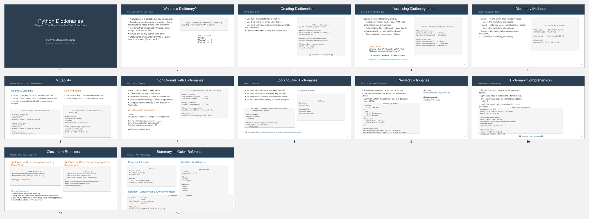 |
| Manus 1.6 Lite | 1.6 lite | unknown | 未记录 | 未记录 | 日志未公开 | 无 PPTX / 额度不足 | md | 日志未公开 |
| Codex（ppt master） | gpt-5.5 extra high | nb | 未记录 | 未记录 | PPTX 未公开 | 6/6 | md | 截图 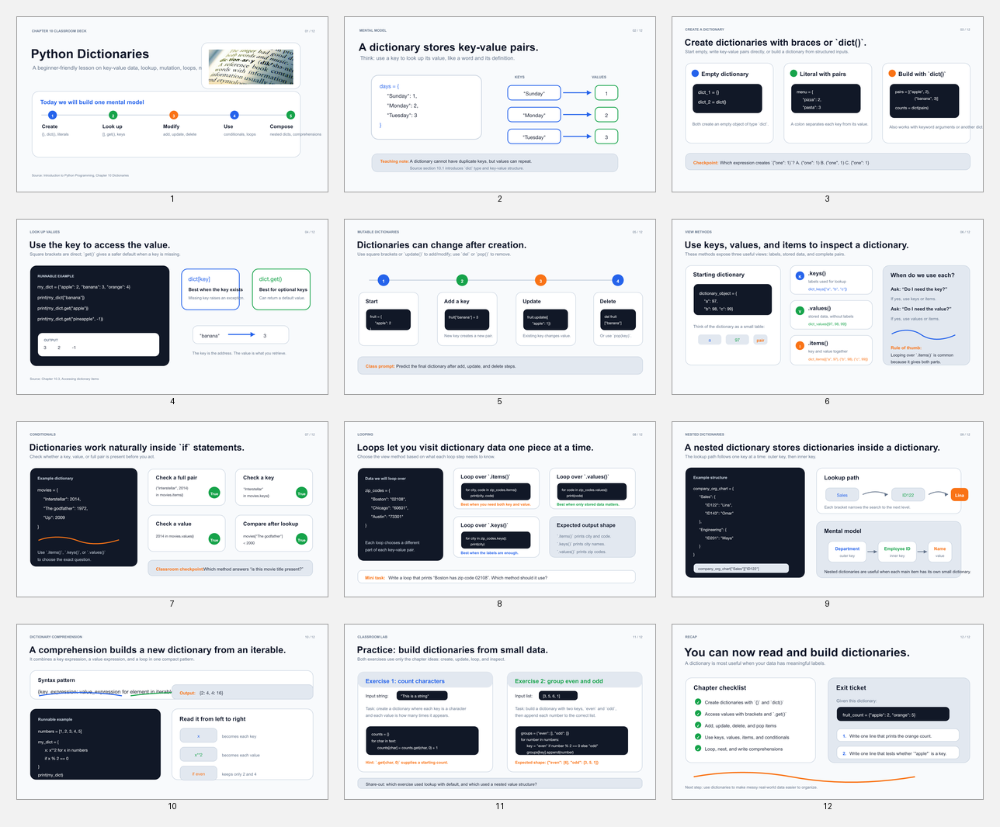 |
| Codex（ppt master glm5.2） | glm5.2 | nb | 未记录 | 未记录 | 缺失 | 缺失 | md | 缺失 |
| OpenClaw（ppt master glm5.2） | glm5.2 | nb | 未记录 | 未记录 | 缺失 | 缺失 | md | 缺失 |
| OpenDesign | default | unknown | 未记录 | 未记录 | 产出 | 5/6 | md | 截图 |
| OpenAgents（ppt master glm5.2） | glm5.2 | nb | 未记录 | 未记录 | 缺失 | 缺失 | md | 缺失 |
{kind=link}
{kind=link}
CASE-GEN-004 · 传播活动简报
最高 6 分
原始提示词
请基于我上传的 FAO / WHO World Food Safety Day 2024 communication toolkit，生成一份 10 页 campaign briefing PPT。 目标听众：政府、食品企业、NGO campaign partners。 输出语言：英文。 风格：public-health campaign briefing, authoritative but accessible。 必须覆盖： 1. campaign theme: Food safety: prepare for the unexpected 2. why food safety emergencies matter 3. target audiences: governments, food businesses, consumers 4. 600 million people annually affected by foodborne illnesses, if supported by the source 5. INFOSAN network's role 6. recommended actions for each stakeholder group 7. campaign messages and activation ideas 8. partner-ready call to action 要求： - 必须保持 FAO/WHO 公共卫生传播语气，不要变成商业广告。 - 任何统计数字必须来自 source。 - 至少 1 页做 stakeholder action matrix。 - 输出一个可编辑 .pptx。
输入：wfsd2024-communication-toolkit.pdf
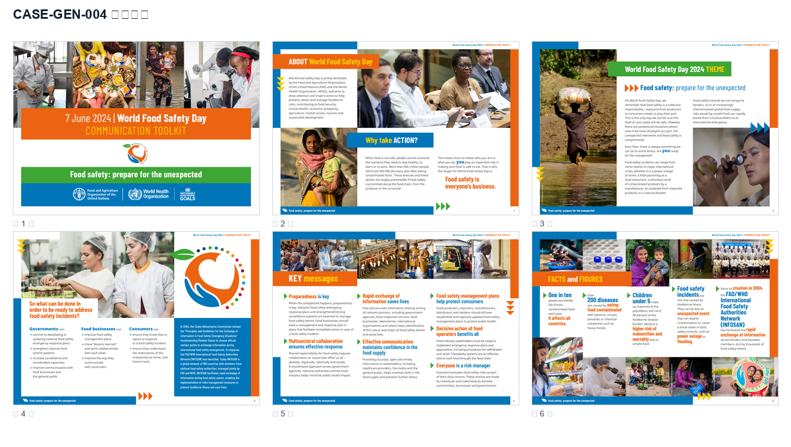
v0.2 打分项
| G-008 | 事实依据 | 传播简报是否准确认定 2024 年世界食品安全日、日期/主题、牵头机构和来源支持的全球食品安全统计？ |
| G-009 | 事实依据 | 利益相关方行动、INFOSAN 引用和传播信息是否扎根于来源，而不是泛泛公共卫生建议？ |
| C-004 | 覆盖度 | 传播活动 PPT 是否覆盖主题、应急背景、利益相关方行动、激活创意、渠道/素材和面向公众的信息纪律？ |
| N-004 | 叙事 | 传播简报是否从紧迫性和主题推进到利益相关方行动与执行计划？ |
| V-005 | 视觉 | 传播 PPT 是否具备清晰的公共传播层级、利益相关方分组和可直接使用的激活页？ |
| EF-002 | 效率 | 智能体是否在生成预算内为 CASE-GEN-004 产出完整有效 PPTX，且无需评测端修复？ |
用例结果表
| 智能体 | 语言模型（主键） | 图像模型（主键） | 耗时 | 令牌消耗/费用 | 产出 | 综合评分 | 详细评分（评估报告） | 截图 |
|---|---|---|---|---|---|---|---|---|
| WorkBuddy | Auto | Auto | 3分6秒 | 未记录 | PPTX 未公开 | 6/6 | md | 截图 |
| Manus 1.6 Lite | 1.6 lite | unknown | 未记录 | 未记录 | 日志未公开 | 无 PPTX / 额度不足 | md | 日志未公开 |
| Codex（ppt master） | gpt-5.5 extra high | nb | 未记录 | 未记录 | PPTX 未公开 | 6/6 | md | 截图 |
| Codex（ppt master glm5.2） | glm5.2 | nb | 未记录 | 未记录 | 缺失 | 缺失 | md | 缺失 |
| OpenClaw（ppt master glm5.2） | glm5.2 | nb | 未记录 | 未记录 | 缺失 | 缺失 | md | 缺失 |
| OpenDesign | default | unknown | 未记录 | 未记录 | 产出 | 6/6 | md | 截图 |
| OpenAgents（ppt master glm5.2） | glm5.2 | nb | 未记录 | 未记录 | 缺失 | 缺失 | md | 缺失 |
CASE-GEN-005 · 学术论文报告
最高 7 分
原始提示词
请基于我上传的 ECCV 2024 paper PDF，生成一份 8 页 lab reading group presentation。 目标听众：computer vision graduate students。 输出语言：英文。 风格：academic, concise, method-first。 必须覆盖： 1. paper title / authors / venue 2. research problem and motivation 3. key method idea 4. model / pipeline / algorithm overview 5. experimental setup 6. main quantitative results 7. qualitative examples or figure-based explanation if source contains them 8. limitations / discussion questions 要求： - 所有 claim 必须能追溯到 paper。 - 不要把 abstract 直接拆成 8 页。 - 至少 1 页要复现或重新绘制 paper 中的重要 method/experiment 图示，不能只是截图堆叠。 - 输出一个可编辑 .pptx。
输入：deckbench_eccv1041_paper.pdf
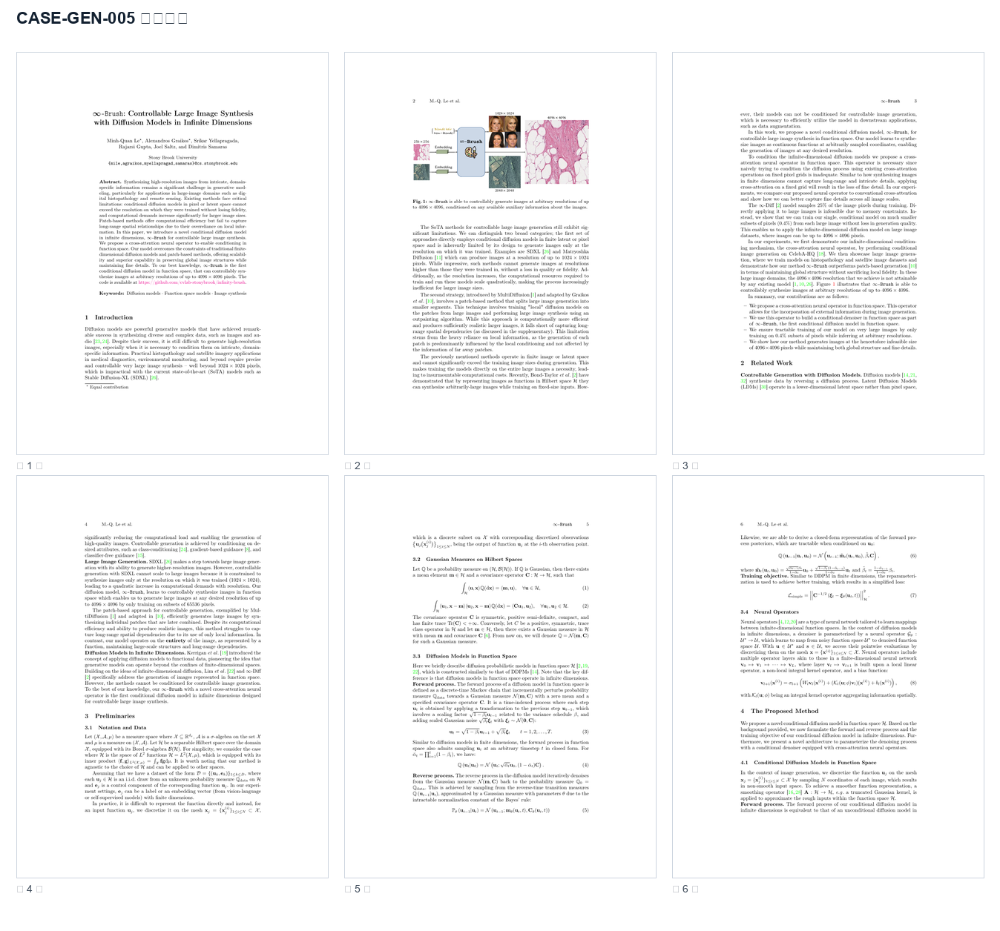
v0.2 打分项
| G-010 | 事实依据 | 学术 PPT 是否正确识别论文，并准确概括研究问题、动机和 Infinity Brush 方法？ |
| G-011 | 事实依据 | 实验主张、数字结果、对比和局限是否有来源支持且没有夸大？ |
| C-005 | 覆盖度 | 学术 PPT 是否覆盖来源身份、问题、方法、实验、结果、局限和讨论启示？ |
| N-005 | 叙事 | 学术 PPT 是否形成从问题到方法、证据、局限和讨论的研究报告论证？ |
| V-006 | 视觉 | 学术 PPT 是否把图、示意图和结果表整合成适合研究报告的可读页面？ |
| CH-004 | 图表 | 研究结果图表/表格是否准确对应 Infinity Brush 论文，并标注指标、数据集和方法，便于读者解读？ |
| E-004 | 可编辑性 | 学术报告标题、解释文本、关键示意图和结果表/图是否在 PPTX 中可维护？ |
用例结果表
| 智能体 | 语言模型（主键） | 图像模型（主键） | 耗时 | 令牌消耗/费用 | 产出 | 综合评分 | 详细评分（评估报告） | 截图 |
|---|---|---|---|---|---|---|---|---|
| WorkBuddy | Auto | Auto | 5分10秒 | 未记录 | PPTX 未公开 | 7/7 | md | 截图 |
| Manus 1.6 Lite | 1.6 lite | unknown | 未记录 | 未记录 | 日志未公开 | 无 PPTX / 额度不足 | md | 日志未公开 |
| Codex（ppt master） | gpt-5.5 extra high | nb | 未记录 | 未记录 | PPTX 未公开 | 7/7 | md | 截图 |
| Codex（ppt master glm5.2） | glm5.2 | nb | 未记录 | 未记录 | 缺失 | 缺失 | md | 缺失 |
| OpenClaw（ppt master glm5.2） | glm5.2 | nb | 未记录 | 未记录 | 缺失 | 缺失 | md | 缺失 |
| OpenDesign | default | unknown | 未记录 | 未记录 | 产出 | 6/7 | md | 截图 |
| OpenAgents（ppt master glm5.2） | glm5.2 | nb | 未记录 | 未记录 | 缺失 | 缺失 | md | 缺失 |
CASE-EDIT-006 · 局部字体修改
最高 3 分
原始提示词
On slide 8, increase the font size of all text by 2 points, but do not change the main title.
输入：FontSizePlus2Slide8TestA.pptx
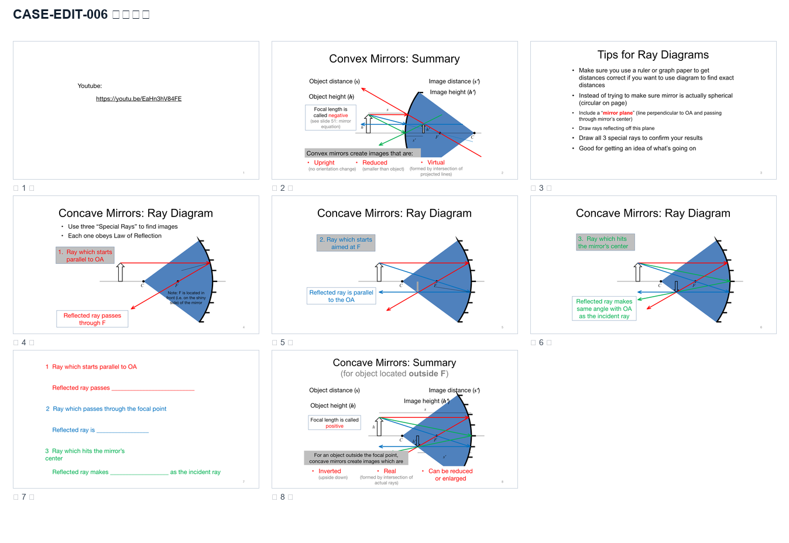
v0.2 打分项
| E-005 | 可编辑性 | 局部字体修改后，目标文本是否仍是可编辑文本，而不是被栅格化或转成不可编辑图片？ |
| R-001 | 修改稳定性 | 编辑是否只把要求的字体修改应用到精确目标页/文本对象？ |
| R-002 | 修改稳定性 | 局部字体修改是否保留非目标页内容、布局、主题、图片和页数？ |
用例结果表
| 智能体 | 语言模型（主键） | 图像模型（主键） | 耗时 | 令牌消耗/费用 | 产出 | 综合评分 | 详细评分（评估报告） | 截图 |
|---|---|---|---|---|---|---|---|---|
| WorkBuddy | Auto | Auto | 1分13秒 | 未记录 | PPTX 未公开 | 3/3 | md | 前后对比 |
| Manus 1.6 Lite | 1.6 lite | unknown | 未记录 | 未记录 | PPTX 未公开 | 3/3 | md | 前后对比 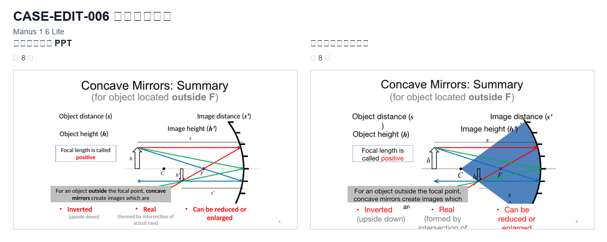 |
| Codex（ppt master） | gpt-5.5 extra high | nb | 未记录 | 未记录 | PPTX 未公开 | 3/3 | md | 前后对比 |
| Codex（ppt master glm5.2） | glm5.2 | nb | 未记录 | 未记录 | 缺失 | 缺失 | md | 缺失 |
| OpenClaw（ppt master glm5.2） | glm5.2 | nb | 未记录 | 未记录 | 缺失 | 缺失 | md | 缺失 |
| OpenDesign | default | unknown | 未记录 | 未记录 | PPTX 未公开 | 3/3 | md | 前后对比 |
| OpenAgents（ppt master glm5.2） | glm5.2 | nb | 未记录 | 未记录 | 缺失 | 缺失 | md | 缺失 |
{kind=link}
CASE-EDIT-007 · 文本转图表
最高 6 分
原始提示词
On slide 8, convert the text data showing uninsured rates into a line chart with markers. Also, create a custom legend for the chart on the right.
输入：LineGraph_TestA.pptx
v0.2 打分项
| V-007 | 视觉 | 编辑后的页面是否以清晰布局、可读标签和与原风格融合的视觉方式呈现新图表？ |
| CH-005 | 图表 | 编辑是否把所有要求的文本数据点正确提取到图表数据中？ |
| CH-006 | 图表 | 编辑是否按要求把文本数据转换成带标记点的原生可编辑折线图？ |
| CH-007 | 图表 | 图表数值、坐标轴、图例和标签是否与提示词中的文本数据一致？ |
| E-006 | 可编辑性 | 生成的折线图是否可编辑，图表数据和标签是否可供后续 PowerPoint 修改？ |
| EF-003 | 效率 | 智能体是否在单轮编辑预算内完成 CASE-EDIT-007 并返回有效修改后的 PPTX？ |
用例结果表
| 智能体 | 语言模型（主键） | 图像模型（主键） | 耗时 | 令牌消耗/费用 | 产出 | 综合评分 | 详细评分（评估报告） | 截图 |
|---|---|---|---|---|---|---|---|---|
| WorkBuddy | Auto | Auto | 1分39秒 | 未记录 | PPTX 未公开 | 6/6 | md | 前后对比 |
| Manus 1.6 Lite | 1.6 lite | unknown | 未记录 | 未记录 | PPTX 未公开 | 6/6 | md | 前后对比 |
| Codex（ppt master） | gpt-5.5 extra high | nb | 未记录 | 未记录 | PPTX 未公开 | 6/6 | md | 前后对比 |
| Codex（ppt master glm5.2） | glm5.2 | nb | 未记录 | 未记录 | 缺失 | 缺失 | md | 缺失 |
| OpenClaw（ppt master glm5.2） | glm5.2 | nb | 未记录 | 未记录 | 缺失 | 缺失 | md | 缺失 |
| OpenDesign | default | unknown | 未记录 | 未记录 | PPTX 未公开 | 5/6 | md | 前后对比 |
| OpenAgents（ppt master glm5.2） | glm5.2 | nb | 未记录 | 未记录 | 缺失 | 缺失 | md | 缺失 |
{kind=link}
{kind=link}
{kind=link}
CASE-EDIT-008R · 原始指标仪表盘
最高 8 分
原始提示词
On slide 1, replace the raw Q2 growth metrics dump with a polished executive dashboard. Use the table and notes on slide 1 as the source of truth. Keep slides 2 and 3 unchanged. Dashboard requirements: 1. Add KPI cards for total Q2 revenue, total paid conversions, and blended CAC per paid conversion. 2. Create an editable monthly revenue chart for Apr, May, and Jun. 3. Create an editable channel efficiency view that compares revenue, paid conversions, CAC, and M30 retention. 4. Add one concise recommendation callout that distinguishes Referral, Search, Paid Social, and Partner. 5. Use the brand guardrail on slide 2 for color and visual style. Constraints: - Do not add or delete slides. - Do not invent data or use values outside slide 1. - Charts should be native PowerPoint charts or structured editable visuals, not screenshots. - The final slide should look like an executive dashboard, not a recolored table.
输入：RevenueRetentionDashboard_RawData_TestA.pptx
v0.2 打分项
| N-006 | 叙事 | 修改后的页面是否像高管仪表盘，带有清晰的 Q2 表现结论和建议，而不是原始表格换皮？ |
| V-008 | 视觉 | 第 1 页是否变成包含 KPI 卡、图表层级和清晰建议标注的高管仪表盘？ |
| V-009 | 视觉 | 重设计后的仪表盘是否遵循第 2 页品牌约束，并且没有严重溢出、标签重叠或不可读图表元素？ |
| CH-008 | 图表 | 仪表盘 KPI 卡或摘要指标是否根据原始表格正确计算，包括 Q2 收入、付费转化和 blended CAC？ |
| CH-009 | 图表 | 仪表盘图表是否准确呈现 4、5、6 月收入，并区分 Search、Paid Social、Referral 和 Partner？ |
| CH-010 | 图表 | 仪表盘建议是否正确使用 CAC 和留存证据，尤其是在出现 Referral 强、Paid Social 弱时反映这些洞察？ |
| E-007 | 可编辑性 | 重设计后的仪表盘 KPI 块、图表、标签和建议标注是否是可编辑的 PowerPoint 对象？ |
| R-003 | 修改稳定性 | CASE-EDIT-008R 是否把第 1 页改成仪表盘，同时保留第 2、3 页并让 PPT 保持 3 页？ |
用例结果表
| 智能体 | 语言模型（主键） | 图像模型（主键） | 耗时 | 令牌消耗/费用 | 产出 | 综合评分 | 详细评分（评估报告） | 截图 |
|---|---|---|---|---|---|---|---|---|
| WorkBuddy | Auto | Auto | 9分53秒 | 未记录 | PPTX 未公开 | 8/8 | md | 前后对比 |
| Manus 1.6 Lite | 1.6 lite | unknown | 未记录 | 未记录 | 日志未公开 | 无 PPTX / 额度不足 | md | 日志未公开 |
| Codex（ppt master） | gpt-5.5 extra high | nb | 未记录 | 未记录 | PPTX 未公开 | 8/8 | md | 前后对比 |
| Codex（ppt master glm5.2） | glm5.2 | nb | 未记录 | 未记录 | 缺失 | 缺失 | md | 缺失 |
| OpenClaw（ppt master glm5.2） | glm5.2 | nb | 未记录 | 未记录 | 缺失 | 缺失 | md | 缺失 |
| OpenDesign | default | unknown | 未记录 | 未记录 | PPTX 未公开 | 8/8 | md | 前后对比 |
| OpenAgents（ppt master glm5.2） | glm5.2 | nb | 未记录 | 未记录 | 缺失 | 缺失 | md | 缺失 |
{kind=link}
CASE-EDIT-009 · 视觉重设计
最高 5 分
原始提示词
Overhaul this presentation to be more professional and visually engaging. Redesign the title slide with a modern two-column layout. On the second slide, organize the rock types into a clear three-column format with images and summarized descriptions. Finally, transform the text-heavy rock cycle on the third slide into a clean, visual diagram.
输入：EducationalRockRecognition_TestA.pptx
v0.2 打分项
| V-010 | 视觉 | 重设计标题页是否在保留岩石识别主题的同时，形成更强、更干净的开场？ |
| V-011 | 视觉 | 重设计内容页是否用更清晰的结构、分组和视觉可扫读性组织岩石识别信息？ |
| V-012 | 视觉 | 视觉重设计是否在目标 PPT 中形成一致设计系统，而不是孤立的一次性页面样式？ |
| V-013 | 视觉 | 视觉素材、图标或示意图是否与岩石/地质/识别相关，并且整合方式不误导观众？ |
| V-014 | 视觉 | 视觉重设计后的 PPT 是否没有明显面向客户可见的布局缺陷？ |
用例结果表
| 智能体 | 语言模型（主键） | 图像模型（主键） | 耗时 | 令牌消耗/费用 | 产出 | 综合评分 | 详细评分（评估报告） | 截图 |
|---|---|---|---|---|---|---|---|---|
| WorkBuddy | Auto | Auto | 2分38秒 | 未记录 | PPTX 未公开 | 4/5 | md | 前后对比 |
| Manus 1.6 Lite | 1.6 lite | unknown | 未记录 | 未记录 | 日志未公开 | 无 PPTX | md | 日志未公开 |
| Codex（ppt master） | gpt-5.5 extra high | nb | 未记录 | 未记录 | PPTX 未公开 | 5/5 | md | 前后对比 |
| Codex（ppt master glm5.2） | glm5.2 | nb | 未记录 | 未记录 | 缺失 | 缺失 | md | 缺失 |
| OpenClaw（ppt master glm5.2） | glm5.2 | nb | 未记录 | 未记录 | 缺失 | 缺失 | md | 缺失 |
| OpenDesign | default | unknown | 未记录 | 未记录 | PPTX 未公开 | 4/5 | md | 前后对比 |
| OpenAgents（ppt master glm5.2） | glm5.2 | nb | 未记录 | 未记录 | 缺失 | 缺失 | md | 缺失 |
{kind=link}
{kind=link}
{kind=link}
CASE-EDIT-010 · 截图重建为可编辑对象
最高 4 分
原始提示词
On slide 12, there is a screenshot of a title slide. Recreate this screenshot as a new, fully editable slide. Use the 'Title Slide' layout, extract the text and the crest from the image, and place them as separate, editable elements.
输入：UB_Title_Screenshot_TestA.pptx
v0.2 打分项
| V-015 | 视觉 | 重建后的可编辑页面是否足够贴近截图，同时提升可维护性？ |
| E-008 | 可编辑性 | 截图转可编辑任务是否用可编辑重建对象替换截图，而不是保留截图作为页面主体？ |
| E-009 | 可编辑性 | 截图中可见文本是否以合理字体、字号和位置保真度重建为可编辑文本？ |
| E-010 | 可编辑性 | 主要形状、图标、校徽/身份标记和布局元素是否被重建或拆分，使页面可维护？ |
用例结果表
| 智能体 | 语言模型（主键） | 图像模型（主键） | 耗时 | 令牌消耗/费用 | 产出 | 综合评分 | 详细评分（评估报告） | 截图 |
|---|---|---|---|---|---|---|---|---|
| WorkBuddy | Auto | Auto | 2分24秒 | 未记录 | PPTX 未公开 | 1/4 | md | 前后对比 |
| Manus 1.6 Lite | 1.6 lite | unknown | 未记录 | 未记录 | 日志未公开 | 无 PPTX / 额度不足 | md | 日志未公开 |
| Codex（ppt master） | gpt-5.5 extra high | nb | 未记录 | 未记录 | PPTX 未公开 | 4/4 | md | 前后对比 |
| Codex（ppt master glm5.2） | glm5.2 | nb | 未记录 | 未记录 | 缺失 | 缺失 | md | 缺失 |
| OpenClaw（ppt master glm5.2） | glm5.2 | nb | 未记录 | 未记录 | 缺失 | 缺失 | md | 缺失 |
| OpenDesign | default | unknown | 未记录 | 未记录 | PPTX 未公开 | 4/4 | md | 前后对比 |
| OpenAgents（ppt master glm5.2） | glm5.2 | nb | 未记录 | 未记录 | 缺失 | 缺失 | md | 缺失 |
{kind=link}
CASE-EDIT-011 · 多轮级联编辑
最高 8 分
原始提示词
Turn 1: Please apply a consistent, professional theme to this presentation. Change all slide titles to a dark blue and all body text to a dark gray. Preserve the original content. Turn 2: On slide 4, replace the static image of the bar chart with an actual, editable column chart. Keep the chart data faithful to the original image. Arrange the new chart and its explanatory text clearly. Turn 3: On slide 5, rearrange the images and their captions for a better flow. Also add a progress bar at the bottom of every slide, and add a new "Bibliography" slide at the very end with the source URL climate.copernicus.eu. Preserve the numeric citation markers on the original slides.
输入：climate_original.pptx
v0.2 打分项
| V-016 | 视觉 | 多轮编辑改动是否与 PPT 视觉融合，且没有造成主题断裂、布局破坏或图表不可读？ |
| CH-011 | 图表 | 多轮编辑是否把目标内容替换为要求的原生柱状图，同时保留必要页面内容？ |
| CH-012 | 图表 | CASE-EDIT-011 的图表数值和标签是否忠于要求数据，且没有被后续编辑扭曲？ |
| E-011 | 可编辑性 | 多轮级联编辑后，修改文本、主题元素、图表和主要形状是否仍可编辑、可维护？ |
| R-004 | 修改稳定性 | CASE-EDIT-011 中，Turn 1 是否在目标范围应用要求的主题/样式修改，且没有造成意外全局破坏？ |
| R-005 | 修改稳定性 | Turn 2 是否完成其要求修改，同时保留 Turn 1 的所有成功修改？ |
| R-006 | 修改稳定性 | Turn 3 是否完成其要求修改，同时保留 Turn 1 和 Turn 2 的成功状态？ |
| EF-004 | 效率 | 智能体是否在多轮编辑预算内完成 CASE-EDIT-011 级联编辑，并产出有效最终 PPTX？ |
用例结果表
| 智能体 | 语言模型（主键） | 图像模型（主键） | 耗时 | 令牌消耗/费用 | 产出 | 综合评分 | 详细评分（评估报告） | 截图 |
|---|---|---|---|---|---|---|---|---|
| WorkBuddy | Auto | Auto | 未记录 | 未记录 | PPTX 未公开 | 7/8 | md | 前后对比 |
| Manus 1.6 Lite | 1.6 lite | unknown | 未记录 | 未记录 | PPTX 未公开 | 仅部分结果 | md | 前后对比 |
| Codex（ppt master） | gpt-5.5 extra high | nb | 未记录 | 未记录 | PPTX 未公开 | 8/8 | md | 前后对比 |
| Codex（ppt master glm5.2） | glm5.2 | nb | 未记录 | 未记录 | 缺失 | 缺失 | md | 缺失 |
| OpenClaw（ppt master glm5.2） | glm5.2 | nb | 未记录 | 未记录 | 缺失 | 缺失 | md | 缺失 |
| OpenDesign | default | unknown | 未记录 | 未记录 | PPTX 未公开 | 7/8 | md | 前后对比 |
| OpenAgents（ppt master glm5.2） | glm5.2 | nb | 未记录 | 未记录 | 缺失 | 缺失 | md | 缺失 |
{kind=link}
{kind=link}
CASE-MT-012 · PPTC 多轮编辑
最高 4 分
原始提示词
Turn 1: For this task, slide_index is zero-based. Set the font color of title textbox 0 on slide indexes 1, 3, 6, 7, 10, 13, and 15 to black. Turn 2: Set the background of slide indexes 0, 1, and 2 to white. Turn 3: On slide index 3, rotate picture 0 to 75 degrees and set its width to 8. On slide index 4, set picture 0 and picture 1 width to 8. Turn 4: On slide index 3, update picture 0 rotation to 60 degrees.
输入：pptc_long_session0_initial.pptx
v0.2 打分项
| R-007 | 修改稳定性 | 在 4 轮 PPTC 风格任务中，标题颜色和背景修改是否应用到指定 0-based 页码，并在后续轮次中保持？ |
| R-008 | 修改稳定性 | 在 PPTC 风格任务中，图片宽度和旋转是否正确应用，包括 Turn 4 将第 3 号页 picture 0 更新为 60 度而不是叠加旋转？ |
| EF-005 | 效率 | CASE-MT-012 中，每一轮是否在单轮预算内产出有效中间 PPTX 或状态更新？ |
| EF-006 | 效率 | 完整 CASE-MT-012 四轮会话是否在会话预算内完成，并产出有效最终 PPTX？ |
用例结果表
| 智能体 | 语言模型（主键） | 图像模型（主键） | 耗时 | 令牌消耗/费用 | 产出 | 综合评分 | 详细评分（评估报告） | 截图 |
|---|---|---|---|---|---|---|---|---|
| WorkBuddy | Auto | Auto | 未记录 | 未记录 | PPTX 未公开 | 4/4 | md | 前后对比 |
| Manus 1.6 Lite | 1.6 lite | unknown | 未记录 | 未记录 | 日志未公开 | 无 PPTX / 额度不足 | md | 日志未公开 |
| Codex（ppt master） | gpt-5.5 extra high | nb | 未记录 | 未记录 | PPTX 未公开 | 4/4 | md | 前后对比 |
| Codex（ppt master glm5.2） | glm5.2 | nb | 未记录 | 未记录 | 缺失 | 缺失 | md | 缺失 |
| OpenClaw（ppt master glm5.2） | glm5.2 | nb | 未记录 | 未记录 | 缺失 | 缺失 | md | 缺失 |
| OpenDesign | default | unknown | 未记录 | 未记录 | PPTX 未公开 | 4/4 | md | 前后对比 |
| OpenAgents（ppt master glm5.2） | glm5.2 | nb | 未记录 | 未记录 | 缺失 | 缺失 | md | 缺失 |
{kind=link}
CASE-GEN-013 · 凹面镜光路
最高 5 分
原始提示词
请基于我上传的 concave mirror ray optics source notes，生成一份 8 页英文教学 PPT。 目标听众：high-school / early undergraduate physics students。 输出语言：英文。 风格：diagram-led physics explainer, clean, precise, classroom-ready。 必须覆盖： 1. What a concave mirror is, including principal axis, vertex V, focal point F, and center of curvature C. 2. The three main principal ray rules. 3. Mirror equation and magnification equation. 4. A worked example with f = 10 cm and do = 30 cm. 5. Object-position cases: beyond C, at C, between F and C, at F, inside F. 6. At least one step-by-step ray diagram. 7. Common misconceptions. 8. A short recap or check-your-understanding slide. 要求： - Ray diagrams must use editable lines/arrows/shapes and meaningful labels. - Do not paste a single textbook screenshot as the main explanation. - The diagram directions must be physically meaningful, not decorative. - Output an editable .pptx.
输入：concave_mirror_ray_optics.md
v0.2 打分项
| G-012 | 事实依据 | PPT 是否按来源正确呈现凹面镜定义、方程、光线规则、物距情形和 worked example？ |
| C-006 | 覆盖度 | PPT 是否覆盖定义、光线规则、方程、物距结果、worked example 和面向学习者的解释？ |
| V-017 | 视觉 | 凹面镜 PPT 是否包含可读光线图，标签、箭头方向、物/像方向正确，并有足够空间用于教学？ |
| V-018 | 视觉 | PPT 是否按设置、光线规则、情形和 worked example 的顺序组织图示/表格，帮助学习者递进理解？ |
| E-012 | 可编辑性 | 凹面镜光线图是否由可编辑线条、箭头、标签和形状构成，而不是纯截图图示？ |
用例结果表
| 智能体 | 语言模型（主键） | 图像模型（主键） | 耗时 | 令牌消耗/费用 | 产出 | 综合评分 | 详细评分（评估报告） | 截图 |
|---|---|---|---|---|---|---|---|---|
| WorkBuddy | Auto | Auto | 7分46秒 | 未记录 | PPTX 未公开 | 5/5 | md | 截图 |
| Manus 1.6 Lite | 1.6 lite | unknown | 未记录 | 未记录 | 日志未公开 | 无 PPTX / 额度不足 | md | 日志未公开 |
| Codex（ppt master） | gpt-5.5 extra high | nb | 未记录 | 未记录 | PPTX 未公开 | 5/5 | md | 截图 |
| Codex（ppt master glm5.2） | glm5.2 | nb | 未记录 | 未记录 | 缺失 | 缺失 | md | 缺失 |
| OpenClaw（ppt master glm5.2） | glm5.2 | nb | 未记录 | 未记录 | 缺失 | 缺失 | md | 缺失 |
| OpenDesign | default | unknown | 未记录 | 未记录 | PPTX 未公开 | 5/5 | md | 截图 |
| OpenAgents（ppt master glm5.2） | glm5.2 | nb | 未记录 | 未记录 | 缺失 | 缺失 | md | 缺失 |
CASE-GEN-014 · 热泵系统讲解
最高 5 分
原始提示词
请基于我上传的 vapor-compression heat pump source notes，生成一份 9 页英文讲解 PPT。 目标听众：facilities team / junior engineering audience。 输出语言：英文。 风格：clear systems explainer, structured, technical but accessible。 必须覆盖： 1. What a heat pump does: moving heat using work input. 2. Five components: evaporator, compressor, condenser, expansion valve, reversing valve. 3. Heating-mode refrigerant state sequence. 4. Heating vs cooling mode comparison. 5. COP_heating and COP_cooling formulas. 6. Why COP can be greater than 1. 7. A qualitative pressure-enthalpy or temperature-state diagram. 8. Cold-weather capacity limitation. 9. One practical troubleshooting / operating implication slide. 要求： - At least 3 slides should use editable diagrams rather than prose-only explanations. - Use arrows to distinguish refrigerant flow, heat flow, and work input. - Do not imply that the system creates heat from nothing. - Output an editable .pptx.
输入：heat_pump_vapor_compression.md
v0.2 打分项
| G-013 | 事实依据 | PPT 是否准确解释蒸汽压缩热泵组件、制热/制冷模式、COP 公式，以及 COP 为什么可以大于 1？ |
| C-007 | 覆盖度 | PPT 是否覆盖组件、制冷剂状态变化、制热/制冷模式、COP 和实际解读？ |
| V-019 | 视觉 | 热泵 PPT 是否包含清晰组件流向图，展示制冷剂路径、热流、做功输入和组件作用？ |
| V-020 | 视觉 | PPT 是否用视觉方式比较制热和制冷模式，清楚显示相同点、差异和方向性？ |
| E-013 | 可编辑性 | 热泵组件流向图是否由分离的组件、箭头和标签构成，便于编辑？ |
用例结果表
| 智能体 | 语言模型（主键） | 图像模型（主键） | 耗时 | 令牌消耗/费用 | 产出 | 综合评分 | 详细评分（评估报告） | 截图 |
|---|---|---|---|---|---|---|---|---|
| WorkBuddy | Auto | Auto | 6分54秒 | 未记录 | PPTX 未公开 | 5/5 | md | 截图 |
| Manus 1.6 Lite | 1.6 lite | unknown | 未记录 | 未记录 | 日志未公开 | 无 PPTX | md | 日志未公开 |
| Codex（ppt master） | gpt-5.5 extra high | nb | 未记录 | 未记录 | PPTX 未公开 | 5/5 | md | 截图 |
| Codex（ppt master glm5.2） | glm5.2 | nb | 未记录 | 未记录 | 缺失 | 缺失 | md | 缺失 |
| OpenClaw（ppt master glm5.2） | glm5.2 | nb | 未记录 | 未记录 | 缺失 | 缺失 | md | 缺失 |
| OpenDesign | default | unknown | 未记录 | 未记录 | PPTX 未公开 | 5/5 | md | 截图 |
| OpenAgents（ppt master glm5.2） | glm5.2 | nb | 未记录 | 未记录 | 缺失 | 缺失 | md | 缺失 |
{kind=link}
{kind=link}
CASE-GEN-015 · Transformer 自注意力
最高 5 分
原始提示词
请基于我上传的 transformer self-attention source notes，生成一份 10 页英文 technical explainer PPT。 目标听众：product engineers who know basic machine learning but are new to transformers。 输出语言：英文。 风格：technical explainer, visual, precise, not marketing。 必须覆盖： 1. Tokens to embeddings and X shape. 2. Q, K, V projections and what query/key/value mean. 3. Scaled dot-product attention formula. 4. Toy dimension example with n = 4, d_model = 6, num_heads = 2, d_k = 3. 5. Score matrix and row-wise softmax. 6. Weighted sum of V. 7. Multi-head split, parallel heads, concat, output projection. 8. Causal masking. 9. Residual connection and layer normalization context. 10. What self-attention is not: it is not the entire transformer. 要求： - Include an editable pipeline diagram. - Include a 4-by-4 attention heatmap or matrix visualization. - Include a multi-head split/concat diagram. - Avoid unsupported training, scaling, or model-performance claims. - Output an editable .pptx.
输入：transformer_self_attention.md
v0.2 打分项
| G-014 | 事实依据 | PPT 是否准确解释 Transformer 自注意力公式、玩具维度、Q/K/V 角色、softmax 加权和 causal mask 约束？ |
| C-008 | 覆盖度 | PPT 是否覆盖 Q/K/V 投影、分数计算、softmax、加权 value、多头 split/concat、热力图解读和 causal mask？ |
| V-021 | 视觉 | 自注意力 PPT 是否包含可读的 4×4 热力图或矩阵可视化，帮助解释 token 间注意力？ |
| V-022 | 视觉 | PPT 是否包含清晰的 split/project/score/softmax/weighted-sum/multi-head 流程图，适合产品工程师理解？ |
| E-014 | 可编辑性 | 自注意力流程图和热力图/矩阵是否足够可编辑，可供后续教学或产品团队修改？ |
用例结果表
| 智能体 | 语言模型（主键） | 图像模型（主键） | 耗时 | 令牌消耗/费用 | 产出 | 综合评分 | 详细评分（评估报告） | 截图 |
|---|---|---|---|---|---|---|---|---|
| WorkBuddy | Auto | Auto | 3分59秒 | 未记录 | PPTX 未公开 | 5/5 | md | 截图 |
| Manus 1.6 Lite | 1.6 lite | unknown | 未记录 | 未记录 | 日志未公开 | 无 PPTX / 额度不足 | md | 日志未公开 |
| Codex（ppt master） | gpt-5.5 extra high | nb | 未记录 | 未记录 | PPTX 未公开 | 5/5 | md | 截图 |
| Codex（ppt master glm5.2） | glm5.2 | nb | 未记录 | 未记录 | 缺失 | 缺失 | md | 缺失 |
| OpenClaw（ppt master glm5.2） | glm5.2 | nb | 未记录 | 未记录 | 缺失 | 缺失 | md | 缺失 |
| OpenDesign | default | unknown | 未记录 | 未记录 | PPTX 未公开 | 5/5 | md | 截图 |
| OpenAgents（ppt master glm5.2） | glm5.2 | nb | 未记录 | 未记录 | 缺失 | 缺失 | md | 缺失 |
{kind=link}
CASE-GEN-016 · 产品增长指标
最高 5 分
原始提示词
请基于我上传的 product growth metrics CSV 和 data visualization notes，生成一份 7 页英文 growth review PPT。 目标听众：CEO, Head of Growth, Product Lead。 输出语言：英文。 风格：executive analytics deck, compact, chart-forward, decision-oriented。 必须覆盖： 1. Executive summary with 3-4 KPI cards. 2. Funnel from visits to signups to activated users to paid conversions. 3. Monthly revenue trend from Jan to Jun 2026. 4. Revenue composition or stacked view by channel. 5. Channel efficiency view using CAC per paid conversion and paid conversions or revenue. 6. Retention / churn signal using retained_m30_pct and churned_paid_users. 7. Recommended next actions by channel. 要求： - Use source data only; do not invent forecast months, channels, or targets. - At least 4 slides must include editable native charts or structured editable visualizations. - Every chart needs units, labels, and one visible takeaway. - Output an editable .pptx.
输入：product_growth_metrics_q1_q2_2026.csv, data_viz_notes.md
v0.2 打分项
| G-015 | 事实依据 | 增长复盘 PPT 是否只使用给定 CSV/说明，避免编造月份、渠道、KPI、预测或因果解释？ |
| N-007 | 叙事 | 增长 PPT 是否从总览动能推进到漏斗/渠道诊断和后续行动，形成指标驱动叙事？ |
| CH-013 | 图表 | KPI 卡和漏斗视觉是否数值正确，包括访问、注册、激活用户、付费转化及相关比率？ |
| CH-014 | 图表 | 月度收入和渠道视觉是否按月、按渠道正确汇总 2026 年 1-6 月数据？ |
| CH-015 | 图表 | CAC 和留存/流失视觉是否根据来源定义计算，并使用正确标签？ |
用例结果表
| 智能体 | 语言模型（主键） | 图像模型（主键） | 耗时 | 令牌消耗/费用 | 产出 | 综合评分 | 详细评分（评估报告） | 截图 |
|---|---|---|---|---|---|---|---|---|
| WorkBuddy | Auto | Auto | 5分18秒 | 未记录 | PPTX 未公开 | 5/5 | md | 截图 |
| Manus 1.6 Lite | 1.6 lite | unknown | 未记录 | 未记录 | 日志未公开 | 无 PPTX / 额度不足 | md | 日志未公开 |
| Codex（ppt master） | gpt-5.5 extra high | nb | 未记录 | 未记录 | PPTX 未公开 | 5/5 | md | 截图 |
| Codex（ppt master glm5.2） | glm5.2 | nb | 未记录 | 未记录 | 缺失 | 缺失 | md | 缺失 |
| OpenClaw（ppt master glm5.2） | glm5.2 | nb | 未记录 | 未记录 | 缺失 | 缺失 | md | 缺失 |
| OpenDesign | default | unknown | 未记录 | 未记录 | PPTX 未公开 | 5/5 | md | 截图 |
| OpenAgents（ppt master glm5.2） | glm5.2 | nb | 未记录 | 未记录 | 缺失 | 缺失 | md | 缺失 |
{kind=link}
{kind=link}
{kind=link}
CASE-GEN-017 · 结账实验复盘
最高 5 分
原始提示词
请基于我上传的 checkout experiment CSV 和 data visualization notes，生成一份 6 页英文 experiment readout PPT。 目标听众：Product, Growth, Design, Engineering leadership。 输出语言：英文。 风格：data-driven decision memo, rigorous, concise。 必须覆盖： 1. Experiment setup: Control vs Redesign, segments, metrics. 2. Overall purchase conversion rate and checkout completion rate comparison. 3. Segment-level conversion comparison. 4. Revenue per session and gross revenue comparison. 5. Guardrails: refund rate, support-ticket rate, and page-load latency. 6. Recommendation slide: launch / hold / iterate, with caveats. 要求： - Do not claim statistical significance unless the source provides a test result. - Keep conversion rate and checkout completion rate clearly separate. - At least 3 slides must include editable native charts or structured editable visualizations. - Output an editable .pptx.
输入：checkout_experiment_results.csv, data_viz_notes.md
v0.2 打分项
| G-016 | 事实依据 | 实验复盘是否准确使用给定 control/redesign 数据、分群和护栏指标，且没有无依据的统计显著性主张？ |
| N-008 | 叙事 | 实验复盘是否用转化、收入、分群和护栏指标支持清晰的发布/暂缓/迭代决策？ |
| CH-016 | 图表 | 整体购买转化、结账完成率和每会话收入是否为 Control 与 Redesign 正确计算并展示？ |
| CH-017 | 图表 | 图表或结构化视觉是否包含分群结果，以及退款、支持工单和/或页面加载延迟等护栏指标？ |
| CH-018 | 图表 | 是否至少有 3 个实验图表或结构化可视化可编辑、可读，并配有有意义的结论？ |
用例结果表
| 智能体 | 语言模型（主键） | 图像模型（主键） | 耗时 | 令牌消耗/费用 | 产出 | 综合评分 | 详细评分（评估报告） | 截图 |
|---|---|---|---|---|---|---|---|---|
| WorkBuddy | Auto | Auto | 2分13秒 | 未记录 | PPTX 未公开 | 5/5 | md | 截图 |
| Manus 1.6 Lite | 1.6 lite | unknown | 未记录 | 未记录 | 日志未公开 | 无 PPTX / 额度不足 | md | 日志未公开 |
| Codex（ppt master） | gpt-5.5 extra high | nb | 未记录 | 未记录 | PPTX 未公开 | 5/5 | md | 截图 |
| Codex（ppt master glm5.2） | glm5.2 | nb | 未记录 | 未记录 | 缺失 | 缺失 | md | 缺失 |
| OpenClaw（ppt master glm5.2） | glm5.2 | nb | 未记录 | 未记录 | 缺失 | 缺失 | md | 缺失 |
| OpenDesign | default | unknown | 未记录 | 未记录 | PPTX 未公开 | 5/5 | md | 截图 |
| OpenAgents（ppt master glm5.2） | glm5.2 | nb | 未记录 | 未记录 | 缺失 | 缺失 | md | 缺失 |
{kind=link}